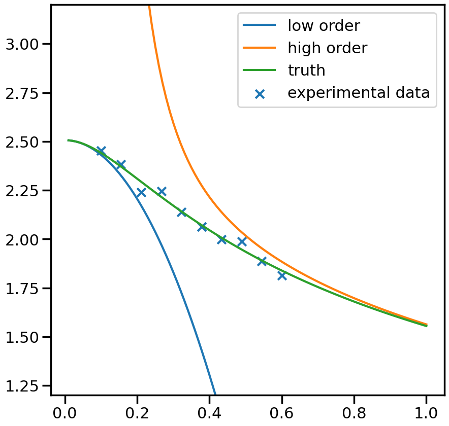
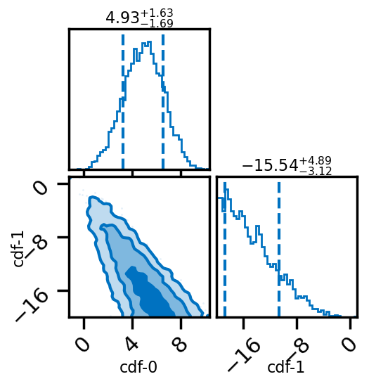
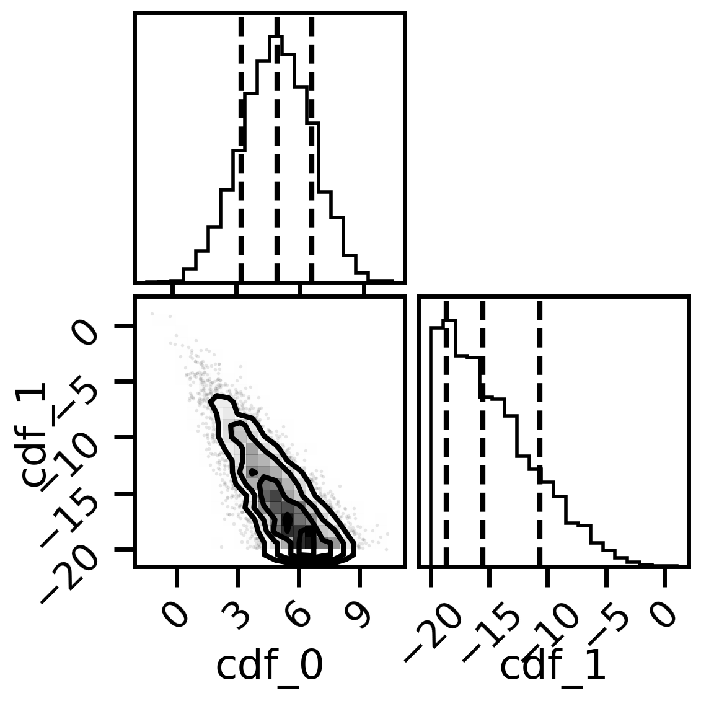
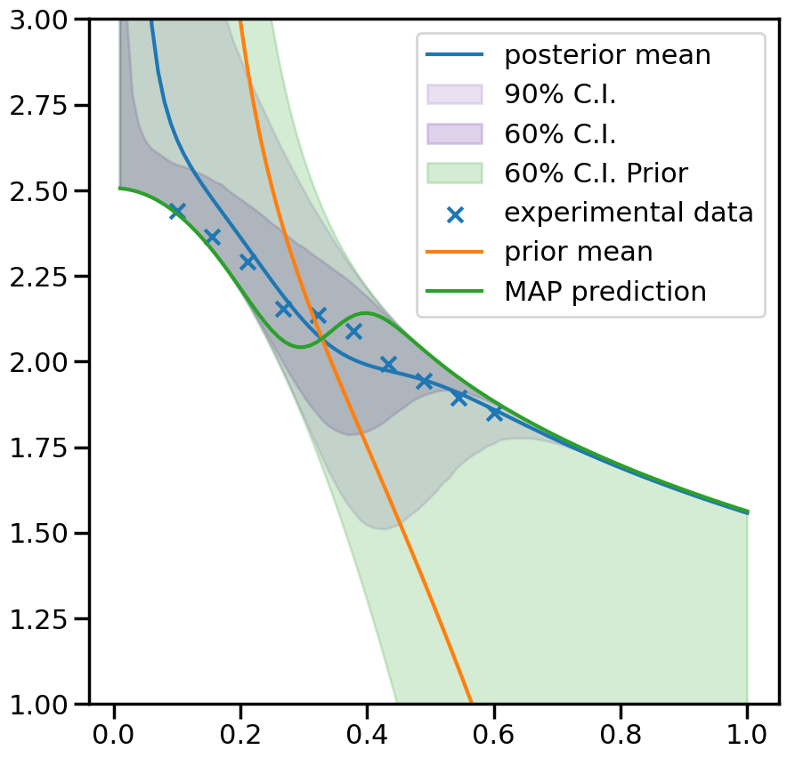

Linear Bivariate BMM with SAMBA toy models : cdf mixing
The best way to learn Taweret is to use it. You can run, modify and experiment with this notebook here.
This notebook shows how to use the Bayesian model mixing package Taweret for a toy problem.
Author : Dan Liyanage
Date : 11/10/2022
More about SAMBA toy models can be found in Uncertainties here, there, and everywhere: interpolating between small- and large-g expansions using Bayesian Model Mixing
[1]:
import sys
# You will have to change the following imports depending on where you have
# the packages installed
# If using binder please uncomment the followings.
sys.path.append("/home/jovyan/")
sys.path.append("/home/jovyan/subpackages/SAMBA")
#sys.path.append("/Users/dananjayaliyanage/git/Taweret")
#sys.path.append("/Users/dananjayaliyanage/git/Taweret/subpackages/SAMBA")
# For plotting
import matplotlib.pyplot as plt
import seaborn as sns
sns.set_context('poster')
# To define priors. (uncoment if not using default priors)
import bilby
# For other operations
import numpy as np
1. Get toy models and the pseudo-experimental data
[2]:
# Toy models from SAMBA
from Taweret.models import samba_models as toy_models
m1 = toy_models.loworder(2, 'uninformative')
m2 = toy_models.highorder(2, 'uninformative')
truth = toy_models.true_model()
exp = toy_models.exp_data()
[3]:
g = np.linspace(0.1, 0.6, 10)
plot_g = np.linspace(0.01,1,100)
m1_prediction = m1.evaluate(plot_g)
m2_prediction = m2.evaluate(plot_g)
true_output = truth.evaluate(plot_g)
exp_data= exp.evaluate(g,error = 0.01)
[4]:
fig, ax_f = plt.subplots(figsize=(10,10))
ax_f.plot(plot_g, m1_prediction[0].flatten(), label='low order')
ax_f.plot(plot_g, m2_prediction[0].flatten(), label='high order')
ax_f.plot(plot_g, true_output[0], label='truth')
ax_f.scatter(g,exp_data[0], marker='x', label='experimental data')
ax_f.set_ylim(1.2,3.2)
ax_f.legend()
[4]:
<matplotlib.legend.Legend at 0x7fe581719b90>

2. Choose a Mixing method
[5]:
# Mixing method
from Taweret.mix.bivariate_linear import BivariateLinear as BL
models= {'low_order':m1,'high_order':m2}
mix_model = BL(models_dic=models, method='cdf')
cdf mixing function has 2 free parameter(s)
Warning : Default prior is set to {'cdf_0': Uniform(minimum=0, maximum=1, name='cdf_0', latex_label='cdf_0', unit=None, boundary=None), 'cdf_1': Uniform(minimum=0, maximum=1, name='cdf_1', latex_label='cdf_1', unit=None, boundary=None)}
To change the prior use `set_prior` method
[6]:
#uncoment to change the prior from the default
priors = bilby.core.prior.PriorDict()
priors['cdf_0'] = bilby.core.prior.Uniform(-20,20, name="cdf_0")
priors['cdf_1'] = bilby.core.prior.Uniform(-20,20, name="cdf_1")
mix_model.set_prior(priors)
[6]:
{'cdf_0': Uniform(minimum=-20, maximum=20, name='cdf_0', latex_label='cdf_0', unit=None, boundary=None),
'cdf_1': Uniform(minimum=-20, maximum=20, name='cdf_1', latex_label='cdf_1', unit=None, boundary=None)}
3. Train to find posterior
[7]:
mix_model.prior
[7]:
{'cdf_0': Uniform(minimum=-20, maximum=20, name='cdf_0', latex_label='cdf_0', unit=None, boundary=None),
'cdf_1': Uniform(minimum=-20, maximum=20, name='cdf_1', latex_label='cdf_1', unit=None, boundary=None)}
[8]:
result = mix_model.train(x_exp=g, y_exp=exp_data[0], y_err=exp_data[1],outdir = 'outdir/samba_bivariate', label='cdf_mix')
10:31 bilby INFO : Running for label 'cdf_mix', output will be saved to 'outdir/samba_bivariate'
10:31 bilby INFO : Search parameters:
10:31 bilby INFO : cdf_0 = Uniform(minimum=-20, maximum=20, name='cdf_0', latex_label='cdf_0', unit=None, boundary=None)
10:31 bilby INFO : cdf_1 = Uniform(minimum=-20, maximum=20, name='cdf_1', latex_label='cdf_1', unit=None, boundary=None)
10:31 bilby INFO : Single likelihood evaluation took 7.861e-04 s
10:31 bilby WARNING : Supplied argument 'printdt' not an argument of 'Ptemcee', removing.
10:31 bilby INFO : Using sampler Ptemcee with kwargs {'ntemps': 5, 'nwalkers': 20, 'Tmax': 100, 'betas': None, 'a': 2.0, 'adaptation_lag': 10000, 'adaptation_time': 100, 'random': None, 'adapt': False, 'swap_ratios': False}
10:31 bilby INFO : Using convergence inputs: ConvergenceInputs(autocorr_c=5, autocorr_tol=50, autocorr_tau=1, gradient_tau=0.1, gradient_mean_log_posterior=0.1, Q_tol=1.02, safety=1, burn_in_nact=50, burn_in_fixed_discard=200, mean_logl_frac=0.01, thin_by_nact=0.5, nsamples=5000, ignore_keys_for_tau=None, min_tau=1, niterations_per_check=5)
The following Default settings for sampler will be used. You can changethese arguments by providing kwargs_for_sampler argement in `train`.Check Bilby documentation for other sampling options.
{'sampler': 'ptemcee', 'ntemps': 5, 'nwalkers': 20, 'Tmax': 100, 'burn_in_fixed_discard': 200, 'nsamples': 5000, 'threads': 6, 'printdt': 60}
10:31 bilby INFO : Generating pos0 samples
10:31 bilby INFO : Starting to sample
1|0:00:00|nc:5.0e+02|a0:0.00-0.80|swp:0.42-0.98|n:nan<5000|t!nan(+nan,+nan)|q:inf|0.32ms/ev
2|0:00:00|nc:1.0e+03|a0:0.10-0.80|swp:0.33-0.98|n:nan<5000|t!nan(+nan,+nan)|q:inf|0.34ms/ev
3|0:00:00|nc:1.5e+03|a0:0.27-0.80|swp:0.30-0.98|n:nan<5000|t!nan(+nan,+nan)|q:inf|0.35ms/ev
4|0:00:00|nc:2.0e+03|a0:0.40-0.85|swp:0.31-0.97|n:nan<5000|t!nan(+nan,+nan)|q:inf|0.33ms/ev
5|0:00:00|nc:2.5e+03|a0:0.44-0.88|swp:0.29-0.97|n:nan<5000|t!nan(+nan,+nan)|q:inf|0.31ms/ev
6|0:00:00|nc:3.0e+03|a0:0.43-0.80|swp:0.30-0.97|n:nan<5000|t!nan(+nan,+nan)|q:inf|0.26ms/ev
7|0:00:01|nc:3.5e+03|a0:0.46-0.71|swp:0.32-0.97|n:nan<5000|t!nan(+nan,+nan)|q:inf|0.27ms/ev
8|0:00:01|nc:4.0e+03|a0:0.47-0.75|swp:0.32-0.97|n:nan<5000|t!nan(+nan,+nan)|q:inf|0.29ms/ev
9|0:00:01|nc:4.5e+03|a0:0.47-0.78|swp:0.33-0.97|n:nan<5000|t!nan(+nan,+nan)|q:inf|0.30ms/ev
10|0:00:01|nc:5.0e+03|a0:0.50-0.74|swp:0.34-0.96|n:nan<5000|t!nan(+nan,+nan)|q:inf|0.29ms/ev
11|0:00:01|nc:5.5e+03|a0:0.51-0.75|swp:0.35-0.96|n:nan<5000|t!nan(+nan,+nan)|q:inf|0.26ms/ev
12|0:00:01|nc:6.0e+03|a0:0.53-0.70|swp:0.36-0.97|n:nan<5000|t!nan(+nan,+nan)|q:inf|0.24ms/ev
13|0:00:01|nc:6.5e+03|a0:0.52-0.71|swp:0.35-0.97|n:nan<5000|t!nan(+nan,+nan)|q:inf|0.24ms/ev
14|0:00:01|nc:7.0e+03|a0:0.50-0.71|swp:0.36-0.97|n:nan<5000|t!nan(+nan,+nan)|q:inf|0.24ms/ev
15|0:00:02|nc:7.5e+03|a0:0.49-0.72|swp:0.36-0.96|n:nan<5000|t!nan(+nan,+nan)|q:inf|0.24ms/ev
16|0:00:02|nc:8.0e+03|a0:0.47-0.69|swp:0.35-0.96|n:nan<5000|t!nan(+nan,+nan)|q:inf|0.24ms/ev
17|0:00:02|nc:8.5e+03|a0:0.48-0.71|swp:0.35-0.96|n:nan<5000|t!nan(+nan,+nan)|q:inf|0.32ms/ev
18|0:00:02|nc:9.0e+03|a0:0.49-0.72|swp:0.36-0.96|n:nan<5000|t!nan(+nan,+nan)|q:inf|0.36ms/ev
19|0:00:02|nc:9.5e+03|a0:0.49-0.69|swp:0.36-0.96|n:nan<5000|t!nan(+nan,+nan)|q:inf|0.44ms/ev
20|0:00:03|nc:1.0e+04|a0:0.51-0.70|swp:0.36-0.96|n:nan<5000|t!nan(+nan,+nan)|q:inf|0.37ms/ev
21|0:00:03|nc:1.0e+04|a0:0.52-0.71|swp:0.37-0.96|n:nan<5000|t!nan(+nan,+nan)|q:inf|0.35ms/ev
22|0:00:03|nc:1.1e+04|a0:0.54-0.72|swp:0.37-0.96|n:nan<5000|t!nan(+nan,+nan)|q:inf|0.29ms/ev
23|0:00:03|nc:1.2e+04|a0:0.56-0.72|swp:0.37-0.96|n:nan<5000|t!nan(+nan,+nan)|q:inf|0.29ms/ev
24|0:00:03|nc:1.2e+04|a0:0.57-0.72|swp:0.37-0.96|n:nan<5000|t!nan(+nan,+nan)|q:inf|0.28ms/ev
25|0:00:03|nc:1.2e+04|a0:0.56-0.72|swp:0.38-0.96|n:nan<5000|t!nan(+nan,+nan)|q:inf|0.27ms/ev
26|0:00:03|nc:1.3e+04|a0:0.56-0.72|swp:0.39-0.96|n:nan<5000|t!nan(+nan,+nan)|q:inf|0.25ms/ev
27|0:00:03|nc:1.4e+04|a0:0.57-0.72|swp:0.39-0.96|n:nan<5000|t!nan(+nan,+nan)|q:inf|0.28ms/ev
28|0:00:04|nc:1.4e+04|a0:0.57-0.72|swp:0.39-0.96|n:nan<5000|t!nan(+nan,+nan)|q:inf|0.28ms/ev
29|0:00:04|nc:1.4e+04|a0:0.58-0.72|swp:0.39-0.96|n:nan<5000|t!nan(+nan,+nan)|q:inf|0.29ms/ev
30|0:00:04|nc:1.5e+04|a0:0.57-0.73|swp:0.39-0.96|n:nan<5000|t!nan(+nan,+nan)|q:inf|0.28ms/ev
31|0:00:04|nc:1.6e+04|a0:0.58-0.72|swp:0.39-0.96|n:nan<5000|t!nan(+nan,+nan)|q:inf|0.28ms/ev
32|0:00:04|nc:1.6e+04|a0:0.57-0.72|swp:0.39-0.96|n:nan<5000|t!nan(+nan,+nan)|q:inf|0.28ms/ev
33|0:00:04|nc:1.6e+04|a0:0.59-0.72|swp:0.39-0.96|n:nan<5000|t!nan(+nan,+nan)|q:inf|0.29ms/ev
34|0:00:04|nc:1.7e+04|a0:0.59-0.73|swp:0.40-0.96|n:nan<5000|t!nan(+nan,+nan)|q:inf|0.29ms/ev
35|0:00:05|nc:1.8e+04|a0:0.58-0.72|swp:0.40-0.96|n:nan<5000|t!nan(+nan,+nan)|q:inf|0.31ms/ev
36|0:00:05|nc:1.8e+04|a0:0.58-0.72|swp:0.40-0.96|n:nan<5000|t!nan(+nan,+nan)|q:inf|0.31ms/ev
37|0:00:05|nc:1.8e+04|a0:0.59-0.72|swp:0.40-0.96|n:nan<5000|t!nan(+nan,+nan)|q:inf|0.31ms/ev
38|0:00:05|nc:1.9e+04|a0:0.59-0.72|swp:0.40-0.96|n:nan<5000|t!nan(+nan,+nan)|q:inf|0.32ms/ev
39|0:00:05|nc:2.0e+04|a0:0.60-0.71|swp:0.40-0.96|n:nan<5000|t!nan(+nan,+nan)|q:inf|0.33ms/ev
40|0:00:05|nc:2.0e+04|a0:0.59-0.71|swp:0.40-0.96|n:nan<5000|t!nan(+nan,+nan)|q:inf|0.33ms/ev
41|0:00:06|nc:2.0e+04|a0:0.60-0.72|swp:0.39-0.96|n:nan<5000|t!nan(+nan,+nan)|q:inf|0.31ms/ev
42|0:00:06|nc:2.1e+04|a0:0.60-0.71|swp:0.39-0.96|n:nan<5000|t!nan(+nan,+nan)|q:inf|0.30ms/ev
43|0:00:06|nc:2.2e+04|a0:0.60-0.72|swp:0.39-0.96|n:nan<5000|t!nan(+nan,+nan)|q:inf|0.30ms/ev
44|0:00:06|nc:2.2e+04|a0:0.60-0.71|swp:0.39-0.95|n:nan<5000|t!nan(+nan,+nan)|q:inf|0.30ms/ev
45|0:00:06|nc:2.2e+04|a0:0.60-0.71|swp:0.39-0.96|n:nan<5000|t!nan(+nan,+nan)|q:inf|0.33ms/ev
46|0:00:06|nc:2.3e+04|a0:0.60-0.71|swp:0.39-0.96|n:nan<5000|t!nan(+nan,+nan)|q:inf|0.35ms/ev
47|0:00:07|nc:2.4e+04|a0:0.60-0.71|swp:0.39-0.96|n:nan<5000|t!nan(+nan,+nan)|q:inf|0.32ms/ev
48|0:00:07|nc:2.4e+04|a0:0.61-0.72|swp:0.39-0.96|n:nan<5000|t!nan(+nan,+nan)|q:inf|0.29ms/ev
49|0:00:07|nc:2.4e+04|a0:0.60-0.71|swp:0.39-0.96|n:nan<5000|t!nan(+nan,+nan)|q:inf|0.25ms/ev
50|0:00:07|nc:2.5e+04|a0:0.61-0.71|swp:0.39-0.96|n:nan<5000|t!nan(+nan,+nan)|q:inf|0.27ms/ev
51|0:00:07|nc:2.6e+04|a0:0.61-0.71|swp:0.39-0.96|n:nan<5000|t!nan(+nan,+nan)|q:inf|0.29ms/ev
52|0:00:07|nc:2.6e+04|a0:0.61-0.71|swp:0.39-0.96|n:nan<5000|t!nan(+nan,+nan)|q:inf|0.30ms/ev
53|0:00:07|nc:2.6e+04|a0:0.60-0.71|swp:0.39-0.96|n:nan<5000|t!nan(+nan,+nan)|q:inf|0.28ms/ev
54|0:00:07|nc:2.7e+04|a0:0.61-0.70|swp:0.39-0.96|n:nan<5000|t!nan(+nan,+nan)|q:inf|0.27ms/ev
55|0:00:08|nc:2.8e+04|a0:0.61-0.70|swp:0.39-0.96|n:nan<5000|t!nan(+nan,+nan)|q:inf|0.26ms/ev
56|0:00:08|nc:2.8e+04|a0:0.61-0.70|swp:0.39-0.95|n:nan<5000|t!nan(+nan,+nan)|q:inf|0.24ms/ev
57|0:00:08|nc:2.8e+04|a0:0.61-0.70|swp:0.39-0.95|n:nan<5000|t!nan(+nan,+nan)|q:inf|0.24ms/ev
58|0:00:08|nc:2.9e+04|a0:0.61-0.70|swp:0.39-0.95|n:nan<5000|t!nan(+nan,+nan)|q:inf|0.24ms/ev
59|0:00:08|nc:3.0e+04|a0:0.62-0.70|swp:0.39-0.95|n:nan<5000|t!nan(+nan,+nan)|q:inf|0.24ms/ev
60|0:00:08|nc:3.0e+04|a0:0.61-0.70|swp:0.39-0.95|n:nan<5000|t!nan(+nan,+nan)|q:inf|0.24ms/ev
61|0:00:08|nc:3.0e+04|a0:0.61-0.70|swp:0.39-0.95|n:nan<5000|t!nan(+nan,+nan)|q:inf|0.25ms/ev
62|0:00:08|nc:3.1e+04|a0:0.62-0.71|swp:0.39-0.95|n:nan<5000|t!nan(+nan,+nan)|q:inf|0.25ms/ev
63|0:00:09|nc:3.2e+04|a0:0.62-0.71|swp:0.39-0.95|n:nan<5000|t!nan(+nan,+nan)|q:inf|0.24ms/ev
64|0:00:09|nc:3.2e+04|a0:0.61-0.70|swp:0.39-0.95|n:nan<5000|t!nan(+nan,+nan)|q:inf|0.24ms/ev
65|0:00:09|nc:3.2e+04|a0:0.61-0.70|swp:0.39-0.95|n:nan<5000|t!nan(+nan,+nan)|q:inf|0.24ms/ev
66|0:00:09|nc:3.3e+04|a0:0.61-0.70|swp:0.39-0.95|n:nan<5000|t!nan(+nan,+nan)|q:inf|0.24ms/ev
67|0:00:09|nc:3.4e+04|a0:0.61-0.70|swp:0.40-0.95|n:nan<5000|t!nan(+nan,+nan)|q:inf|0.23ms/ev
68|0:00:09|nc:3.4e+04|a0:0.62-0.70|swp:0.40-0.95|n:nan<5000|t!nan(+nan,+nan)|q:inf|0.22ms/ev
69|0:00:09|nc:3.4e+04|a0:0.62-0.70|swp:0.40-0.95|n:nan<5000|t!nan(+nan,+nan)|q:inf|0.22ms/ev
70|0:00:09|nc:3.5e+04|a0:0.62-0.70|swp:0.40-0.95|n:nan<5000|t!nan(+nan,+nan)|q:inf|0.22ms/ev
71|0:00:10|nc:3.6e+04|a0:0.62-0.70|swp:0.40-0.95|n:nan<5000|t!nan(+nan,+nan)|q:inf|0.23ms/ev
72|0:00:10|nc:3.6e+04|a0:0.62-0.70|swp:0.40-0.95|n:nan<5000|t!nan(+nan,+nan)|q:inf|0.24ms/ev
73|0:00:10|nc:3.6e+04|a0:0.62-0.70|swp:0.40-0.95|n:nan<5000|t!nan(+nan,+nan)|q:inf|0.23ms/ev
74|0:00:10|nc:3.7e+04|a0:0.62-0.69|swp:0.40-0.95|n:nan<5000|t!nan(+nan,+nan)|q:inf|0.22ms/ev
75|0:00:10|nc:3.8e+04|a0:0.62-0.70|swp:0.40-0.95|n:nan<5000|t!nan(+nan,+nan)|q:inf|0.23ms/ev
76|0:00:10|nc:3.8e+04|a0:0.62-0.69|swp:0.39-0.95|n:nan<5000|t!nan(+nan,+nan)|q:inf|0.24ms/ev
77|0:00:10|nc:3.8e+04|a0:0.62-0.69|swp:0.39-0.95|n:nan<5000|t!nan(+nan,+nan)|q:inf|0.25ms/ev
78|0:00:10|nc:3.9e+04|a0:0.62-0.69|swp:0.40-0.95|n:nan<5000|t!nan(+nan,+nan)|q:inf|0.24ms/ev
79|0:00:10|nc:4.0e+04|a0:0.62-0.69|swp:0.40-0.95|n:nan<5000|t!nan(+nan,+nan)|q:inf|0.22ms/ev
80|0:00:11|nc:4.0e+04|a0:0.62-0.69|swp:0.40-0.95|n:nan<5000|t!nan(+nan,+nan)|q:inf|0.21ms/ev
81|0:00:11|nc:4.0e+04|a0:0.62-0.69|swp:0.40-0.95|n:nan<5000|t!nan(+nan,+nan)|q:inf|0.21ms/ev
82|0:00:11|nc:4.1e+04|a0:0.62-0.69|swp:0.40-0.95|n:nan<5000|t!nan(+nan,+nan)|q:inf|0.22ms/ev
83|0:00:11|nc:4.2e+04|a0:0.62-0.69|swp:0.40-0.95|n:nan<5000|t!nan(+nan,+nan)|q:inf|0.24ms/ev
84|0:00:11|nc:4.2e+04|a0:0.62-0.69|swp:0.40-0.95|n:nan<5000|t!nan(+nan,+nan)|q:inf|0.25ms/ev
85|0:00:11|nc:4.2e+04|a0:0.62-0.69|swp:0.40-0.95|n:nan<5000|t!nan(+nan,+nan)|q:inf|0.25ms/ev
86|0:00:11|nc:4.3e+04|a0:0.62-0.69|swp:0.40-0.95|n:nan<5000|t!nan(+nan,+nan)|q:inf|0.23ms/ev
87|0:00:11|nc:4.4e+04|a0:0.62-0.69|swp:0.40-0.95|n:nan<5000|t!nan(+nan,+nan)|q:inf|0.22ms/ev
88|0:00:11|nc:4.4e+04|a0:0.62-0.69|swp:0.40-0.95|n:nan<5000|t!nan(+nan,+nan)|q:inf|0.22ms/ev
89|0:00:12|nc:4.4e+04|a0:0.62-0.69|swp:0.40-0.95|n:nan<5000|t!nan(+nan,+nan)|q:inf|0.22ms/ev
90|0:00:12|nc:4.5e+04|a0:0.62-0.69|swp:0.40-0.96|n:nan<5000|t!nan(+nan,+nan)|q:inf|0.22ms/ev
91|0:00:12|nc:4.6e+04|a0:0.62-0.69|swp:0.40-0.96|n:nan<5000|t!nan(+nan,+nan)|q:inf|0.22ms/ev
92|0:00:12|nc:4.6e+04|a0:0.62-0.69|swp:0.40-0.96|n:nan<5000|t!nan(+nan,+nan)|q:inf|0.22ms/ev
93|0:00:12|nc:4.6e+04|a0:0.62-0.69|swp:0.40-0.96|n:nan<5000|t!nan(+nan,+nan)|q:inf|0.23ms/ev
94|0:00:12|nc:4.7e+04|a0:0.62-0.69|swp:0.40-0.96|n:nan<5000|t!nan(+nan,+nan)|q:inf|0.23ms/ev
95|0:00:12|nc:4.8e+04|a0:0.62-0.69|swp:0.40-0.96|n:nan<5000|t!nan(+nan,+nan)|q:inf|0.23ms/ev
96|0:00:12|nc:4.8e+04|a0:0.62-0.69|swp:0.40-0.96|n:nan<5000|t!nan(+nan,+nan)|q:inf|0.22ms/ev
97|0:00:12|nc:4.8e+04|a0:0.62-0.69|swp:0.40-0.96|n:nan<5000|t!nan(+nan,+nan)|q:inf|0.22ms/ev
98|0:00:13|nc:4.9e+04|a0:0.61-0.69|swp:0.40-0.96|n:nan<5000|t!nan(+nan,+nan)|q:inf|0.21ms/ev
99|0:00:13|nc:5.0e+04|a0:0.61-0.69|swp:0.40-0.95|n:nan<5000|t!nan(+nan,+nan)|q:inf|0.22ms/ev
100|0:00:13|nc:5.0e+04|a0:0.61-0.69|swp:0.40-0.95|n:nan<5000|t!nan(+nan,+nan)|q:inf|0.23ms/ev
101|0:00:13|nc:5.0e+04|a0:0.61-0.69|swp:0.40-0.95|n:nan<5000|t!nan(+nan,+nan)|q:inf|0.23ms/ev
102|0:00:13|nc:5.1e+04|a0:0.62-0.69|swp:0.40-0.95|n:nan<5000|t!nan(+nan,+nan)|q:inf|0.23ms/ev
103|0:00:13|nc:5.2e+04|a0:0.62-0.69|swp:0.40-0.95|n:nan<5000|t!nan(+nan,+nan)|q:inf|0.23ms/ev
104|0:00:13|nc:5.2e+04|a0:0.62-0.69|swp:0.40-0.95|n:nan<5000|t!nan(+nan,+nan)|q:inf|0.23ms/ev
105|0:00:13|nc:5.2e+04|a0:0.62-0.69|swp:0.40-0.95|n:nan<5000|t!nan(+nan,+nan)|q:inf|0.23ms/ev
106|0:00:13|nc:5.3e+04|a0:0.62-0.69|swp:0.40-0.95|n:nan<5000|t!nan(+nan,+nan)|q:inf|0.23ms/ev
107|0:00:14|nc:5.4e+04|a0:0.62-0.69|swp:0.40-0.95|n:nan<5000|t!nan(+nan,+nan)|q:inf|0.22ms/ev
108|0:00:14|nc:5.4e+04|a0:0.61-0.69|swp:0.40-0.95|n:nan<5000|t!nan(+nan,+nan)|q:inf|0.22ms/ev
109|0:00:14|nc:5.4e+04|a0:0.62-0.70|swp:0.40-0.96|n:nan<5000|t!nan(+nan,+nan)|q:inf|0.23ms/ev
110|0:00:14|nc:5.5e+04|a0:0.62-0.69|swp:0.40-0.96|n:nan<5000|t!nan(+nan,+nan)|q:inf|0.24ms/ev
111|0:00:14|nc:5.6e+04|a0:0.62-0.69|swp:0.40-0.96|n:nan<5000|t!nan(+nan,+nan)|q:inf|0.24ms/ev
112|0:00:14|nc:5.6e+04|a0:0.62-0.69|swp:0.40-0.96|n:nan<5000|t!nan(+nan,+nan)|q:inf|0.24ms/ev
113|0:00:14|nc:5.6e+04|a0:0.62-0.68|swp:0.40-0.96|n:nan<5000|t!nan(+nan,+nan)|q:inf|0.24ms/ev
114|0:00:14|nc:5.7e+04|a0:0.62-0.69|swp:0.40-0.96|n:nan<5000|t!nan(+nan,+nan)|q:inf|0.24ms/ev
115|0:00:15|nc:5.8e+04|a0:0.62-0.69|swp:0.40-0.96|n:nan<5000|t!nan(+nan,+nan)|q:inf|0.24ms/ev
116|0:00:15|nc:5.8e+04|a0:0.62-0.69|swp:0.40-0.96|n:nan<5000|t!nan(+nan,+nan)|q:inf|0.23ms/ev
117|0:00:15|nc:5.8e+04|a0:0.62-0.69|swp:0.40-0.96|n:nan<5000|t!nan(+nan,+nan)|q:inf|0.22ms/ev
118|0:00:15|nc:5.9e+04|a0:0.62-0.69|swp:0.40-0.96|n:nan<5000|t!nan(+nan,+nan)|q:inf|0.23ms/ev
119|0:00:15|nc:6.0e+04|a0:0.63-0.69|swp:0.40-0.96|n:nan<5000|t!nan(+nan,+nan)|q:inf|0.24ms/ev
120|0:00:15|nc:6.0e+04|a0:0.62-0.69|swp:0.40-0.96|n:nan<5000|t!nan(+nan,+nan)|q:inf|0.25ms/ev
121|0:00:15|nc:6.0e+04|a0:0.63-0.69|swp:0.40-0.96|n:nan<5000|t!nan(+nan,+nan)|q:inf|0.23ms/ev
122|0:00:15|nc:6.1e+04|a0:0.62-0.69|swp:0.40-0.96|n:nan<5000|t!nan(+nan,+nan)|q:inf|0.23ms/ev
123|0:00:15|nc:6.2e+04|a0:0.62-0.69|swp:0.40-0.96|n:nan<5000|t!nan(+nan,+nan)|q:inf|0.24ms/ev
124|0:00:16|nc:6.2e+04|a0:0.62-0.69|swp:0.40-0.96|n:nan<5000|t!nan(+nan,+nan)|q:inf|0.24ms/ev
125|0:00:16|nc:6.2e+04|a0:0.62-0.69|swp:0.40-0.96|n:nan<5000|t!nan(+nan,+nan)|q:inf|0.24ms/ev
126|0:00:16|nc:6.3e+04|a0:0.62-0.69|swp:0.40-0.96|n:nan<5000|t!nan(+nan,+nan)|q:inf|0.22ms/ev
127|0:00:16|nc:6.4e+04|a0:0.62-0.69|swp:0.40-0.96|n:nan<5000|t!nan(+nan,+nan)|q:inf|0.23ms/ev
128|0:00:16|nc:6.4e+04|a0:0.62-0.69|swp:0.40-0.96|n:nan<5000|t!nan(+nan,+nan)|q:inf|0.24ms/ev
129|0:00:16|nc:6.4e+04|a0:0.62-0.69|swp:0.40-0.96|n:nan<5000|t!nan(+nan,+nan)|q:inf|0.24ms/ev
130|0:00:16|nc:6.5e+04|a0:0.62-0.68|swp:0.40-0.95|n:nan<5000|t!nan(+nan,+nan)|q:inf|0.24ms/ev
131|0:00:16|nc:6.6e+04|a0:0.62-0.68|swp:0.40-0.95|n:nan<5000|t!nan(+nan,+nan)|q:inf|0.25ms/ev
132|0:00:17|nc:6.6e+04|a0:0.62-0.68|swp:0.40-0.95|n:nan<5000|t!nan(+nan,+nan)|q:inf|0.27ms/ev
133|0:00:17|nc:6.6e+04|a0:0.62-0.68|swp:0.40-0.95|n:nan<5000|t!nan(+nan,+nan)|q:inf|0.28ms/ev
134|0:00:17|nc:6.7e+04|a0:0.62-0.68|swp:0.41-0.95|n:nan<5000|t!nan(+nan,+nan)|q:inf|0.27ms/ev
135|0:00:17|nc:6.8e+04|a0:0.62-0.68|swp:0.41-0.95|n:nan<5000|t!nan(+nan,+nan)|q:inf|0.26ms/ev
136|0:00:17|nc:6.8e+04|a0:0.62-0.68|swp:0.41-0.95|n:nan<5000|t!nan(+nan,+nan)|q:inf|0.23ms/ev
137|0:00:17|nc:6.8e+04|a0:0.62-0.68|swp:0.41-0.95|n:nan<5000|t!nan(+nan,+nan)|q:inf|0.23ms/ev
138|0:00:17|nc:6.9e+04|a0:0.62-0.68|swp:0.41-0.95|n:nan<5000|t!nan(+nan,+nan)|q:inf|0.22ms/ev
139|0:00:17|nc:7.0e+04|a0:0.62-0.68|swp:0.41-0.95|n:nan<5000|t!nan(+nan,+nan)|q:inf|0.22ms/ev
140|0:00:18|nc:7.0e+04|a0:0.62-0.68|swp:0.41-0.95|n:nan<5000|t!nan(+nan,+nan)|q:inf|0.26ms/ev
141|0:00:18|nc:7.0e+04|a0:0.62-0.68|swp:0.41-0.95|n:nan<5000|t!nan(+nan,+nan)|q:inf|0.29ms/ev
142|0:00:18|nc:7.1e+04|a0:0.62-0.68|swp:0.41-0.95|n:nan<5000|t!nan(+nan,+nan)|q:inf|0.29ms/ev
143|0:00:18|nc:7.2e+04|a0:0.62-0.68|swp:0.41-0.95|n:nan<5000|t!nan(+nan,+nan)|q:inf|0.27ms/ev
144|0:00:18|nc:7.2e+04|a0:0.62-0.68|swp:0.41-0.95|n:nan<5000|t!nan(+nan,+nan)|q:inf|0.24ms/ev
145|0:00:18|nc:7.2e+04|a0:0.62-0.68|swp:0.41-0.95|n:nan<5000|t!nan(+nan,+nan)|q:inf|0.24ms/ev
146|0:00:18|nc:7.3e+04|a0:0.62-0.68|swp:0.41-0.95|n:nan<5000|t!nan(+nan,+nan)|q:inf|0.24ms/ev
147|0:00:18|nc:7.4e+04|a0:0.62-0.68|swp:0.41-0.95|n:nan<5000|t!nan(+nan,+nan)|q:inf|0.24ms/ev
148|0:00:19|nc:7.4e+04|a0:0.62-0.68|swp:0.41-0.95|n:nan<5000|t!nan(+nan,+nan)|q:inf|0.23ms/ev
149|0:00:19|nc:7.4e+04|a0:0.62-0.68|swp:0.41-0.95|n:nan<5000|t!nan(+nan,+nan)|q:inf|0.23ms/ev
150|0:00:19|nc:7.5e+04|a0:0.62-0.68|swp:0.41-0.95|n:nan<5000|t!nan(+nan,+nan)|q:inf|0.23ms/ev
151|0:00:19|nc:7.6e+04|a0:0.62-0.68|swp:0.41-0.95|n:nan<5000|t!nan(+nan,+nan)|q:inf|0.23ms/ev
152|0:00:19|nc:7.6e+04|a0:0.62-0.68|swp:0.41-0.95|n:nan<5000|t!nan(+nan,+nan)|q:inf|0.23ms/ev
153|0:00:19|nc:7.6e+04|a0:0.62-0.68|swp:0.41-0.95|n:nan<5000|t!nan(+nan,+nan)|q:inf|0.24ms/ev
154|0:00:19|nc:7.7e+04|a0:0.62-0.68|swp:0.41-0.95|n:nan<5000|t!nan(+nan,+nan)|q:inf|0.24ms/ev
155|0:00:19|nc:7.8e+04|a0:0.62-0.68|swp:0.41-0.95|n:nan<5000|t!nan(+nan,+nan)|q:inf|0.23ms/ev
156|0:00:20|nc:7.8e+04|a0:0.62-0.68|swp:0.41-0.95|n:nan<5000|t!nan(+nan,+nan)|q:inf|0.23ms/ev
157|0:00:20|nc:7.8e+04|a0:0.62-0.68|swp:0.41-0.95|n:nan<5000|t!nan(+nan,+nan)|q:inf|0.23ms/ev
158|0:00:20|nc:7.9e+04|a0:0.62-0.67|swp:0.41-0.95|n:nan<5000|t!nan(+nan,+nan)|q:inf|0.24ms/ev
159|0:00:20|nc:8.0e+04|a0:0.62-0.68|swp:0.41-0.95|n:nan<5000|t!nan(+nan,+nan)|q:inf|0.24ms/ev
160|0:00:20|nc:8.0e+04|a0:0.62-0.68|swp:0.41-0.95|n:nan<5000|t!nan(+nan,+nan)|q:inf|0.24ms/ev
161|0:00:20|nc:8.0e+04|a0:0.62-0.68|swp:0.41-0.95|n:nan<5000|t!nan(+nan,+nan)|q:inf|0.24ms/ev
162|0:00:20|nc:8.1e+04|a0:0.62-0.68|swp:0.41-0.95|n:nan<5000|t!nan(+nan,+nan)|q:inf|0.23ms/ev
163|0:00:20|nc:8.2e+04|a0:0.62-0.68|swp:0.41-0.95|n:nan<5000|t!nan(+nan,+nan)|q:inf|0.23ms/ev
164|0:00:20|nc:8.2e+04|a0:0.62-0.68|swp:0.41-0.95|n:nan<5000|t!nan(+nan,+nan)|q:inf|0.23ms/ev
165|0:00:21|nc:8.2e+04|a0:0.62-0.68|swp:0.41-0.95|n:nan<5000|t!nan(+nan,+nan)|q:inf|0.23ms/ev
166|0:00:21|nc:8.3e+04|a0:0.62-0.68|swp:0.41-0.95|n:nan<5000|t!nan(+nan,+nan)|q:inf|0.23ms/ev
167|0:00:21|nc:8.4e+04|a0:0.62-0.68|swp:0.41-0.95|n:nan<5000|t!nan(+nan,+nan)|q:inf|0.24ms/ev
168|0:00:21|nc:8.4e+04|a0:0.62-0.68|swp:0.41-0.95|n:nan<5000|t!nan(+nan,+nan)|q:inf|0.24ms/ev
169|0:00:21|nc:8.4e+04|a0:0.62-0.68|swp:0.41-0.95|n:nan<5000|t!nan(+nan,+nan)|q:inf|0.24ms/ev
170|0:00:21|nc:8.5e+04|a0:0.62-0.68|swp:0.41-0.95|n:nan<5000|t!nan(+nan,+nan)|q:inf|0.23ms/ev
171|0:00:21|nc:8.6e+04|a0:0.62-0.68|swp:0.41-0.95|n:nan<5000|t!nan(+nan,+nan)|q:inf|0.24ms/ev
172|0:00:21|nc:8.6e+04|a0:0.62-0.68|swp:0.41-0.95|n:nan<5000|t!nan(+nan,+nan)|q:inf|0.28ms/ev
173|0:00:22|nc:8.6e+04|a0:0.62-0.68|swp:0.41-0.95|n:nan<5000|t!nan(+nan,+nan)|q:inf|0.29ms/ev
174|0:00:22|nc:8.7e+04|a0:0.62-0.68|swp:0.41-0.95|n:nan<5000|t!nan(+nan,+nan)|q:inf|0.29ms/ev
175|0:00:22|nc:8.8e+04|a0:0.62-0.68|swp:0.41-0.95|n:nan<5000|t!nan(+nan,+nan)|q:inf|0.27ms/ev
176|0:00:22|nc:8.8e+04|a0:0.62-0.68|swp:0.41-0.95|n:nan<5000|t!nan(+nan,+nan)|q:inf|0.26ms/ev
177|0:00:22|nc:8.8e+04|a0:0.63-0.67|swp:0.41-0.95|n:nan<5000|t!nan(+nan,+nan)|q:inf|0.24ms/ev
178|0:00:22|nc:8.9e+04|a0:0.63-0.68|swp:0.41-0.95|n:nan<5000|t!nan(+nan,+nan)|q:inf|0.23ms/ev
179|0:00:22|nc:9.0e+04|a0:0.63-0.68|swp:0.41-0.95|n:nan<5000|t!nan(+nan,+nan)|q:inf|0.23ms/ev
180|0:00:22|nc:9.0e+04|a0:0.63-0.67|swp:0.41-0.95|n:nan<5000|t!nan(+nan,+nan)|q:inf|0.23ms/ev
181|0:00:23|nc:9.0e+04|a0:0.63-0.68|swp:0.41-0.95|n:nan<5000|t!nan(+nan,+nan)|q:inf|0.22ms/ev
182|0:00:23|nc:9.1e+04|a0:0.63-0.68|swp:0.41-0.95|n:nan<5000|t!nan(+nan,+nan)|q:inf|0.23ms/ev
183|0:00:23|nc:9.2e+04|a0:0.63-0.68|swp:0.41-0.95|n:nan<5000|t!nan(+nan,+nan)|q:inf|0.25ms/ev
184|0:00:23|nc:9.2e+04|a0:0.63-0.68|swp:0.41-0.95|n:nan<5000|t!nan(+nan,+nan)|q:inf|0.26ms/ev
185|0:00:23|nc:9.2e+04|a0:0.63-0.68|swp:0.41-0.95|n:nan<5000|t!nan(+nan,+nan)|q:inf|0.25ms/ev
186|0:00:23|nc:9.3e+04|a0:0.63-0.68|swp:0.41-0.95|n:nan<5000|t!nan(+nan,+nan)|q:inf|0.25ms/ev
187|0:00:23|nc:9.4e+04|a0:0.63-0.68|swp:0.41-0.95|n:nan<5000|t!nan(+nan,+nan)|q:inf|0.25ms/ev
188|0:00:23|nc:9.4e+04|a0:0.63-0.67|swp:0.41-0.95|n:nan<5000|t!nan(+nan,+nan)|q:inf|0.24ms/ev
189|0:00:24|nc:9.4e+04|a0:0.63-0.68|swp:0.41-0.95|n:nan<5000|t!nan(+nan,+nan)|q:inf|0.28ms/ev
190|0:00:24|nc:9.5e+04|a0:0.63-0.68|swp:0.41-0.95|n:nan<5000|t!nan(+nan,+nan)|q:inf|0.27ms/ev
191|0:00:24|nc:9.6e+04|a0:0.63-0.68|swp:0.41-0.95|n:nan<5000|t!nan(+nan,+nan)|q:inf|0.27ms/ev
192|0:00:24|nc:9.6e+04|a0:0.63-0.68|swp:0.41-0.95|n:nan<5000|t!nan(+nan,+nan)|q:inf|0.23ms/ev
193|0:00:24|nc:9.6e+04|a0:0.63-0.67|swp:0.41-0.95|n:nan<5000|t!nan(+nan,+nan)|q:inf|0.24ms/ev
194|0:00:24|nc:9.7e+04|a0:0.63-0.67|swp:0.41-0.95|n:nan<5000|t!nan(+nan,+nan)|q:inf|0.24ms/ev
195|0:00:24|nc:9.8e+04|a0:0.63-0.67|swp:0.41-0.95|n:nan<5000|t!nan(+nan,+nan)|q:inf|0.25ms/ev
196|0:00:24|nc:9.8e+04|a0:0.63-0.67|swp:0.41-0.95|n:nan<5000|t!nan(+nan,+nan)|q:inf|0.24ms/ev
197|0:00:25|nc:9.8e+04|a0:0.63-0.67|swp:0.41-0.95|n:nan<5000|t!nan(+nan,+nan)|q:inf|0.24ms/ev
198|0:00:25|nc:9.9e+04|a0:0.63-0.67|swp:0.41-0.95|n:nan<5000|t!nan(+nan,+nan)|q:inf|0.23ms/ev
199|0:00:25|nc:1.0e+05|a0:0.63-0.67|swp:0.41-0.95|n:nan<5000|t!nan(+nan,+nan)|q:inf|0.23ms/ev
200|0:00:25|nc:1.0e+05|a0:0.63-0.67|swp:0.41-0.95|n:nan<5000|t!nan(+nan,+nan)|q:inf|0.22ms/ev
201|0:00:25|nc:1.0e+05|a0:0.63-0.67|swp:0.41-0.95|n:nan<5000|t!nan(+nan,+nan)|q:inf|0.25ms/ev
202|0:00:25|nc:1.0e+05|a0:0.63-0.67|swp:0.41-0.95|n:nan<5000|t!nan(+nan,+nan)|q:inf|0.25ms/ev
203|0:00:25|nc:1.0e+05|a0:0.63-0.67|swp:0.41-0.95|n:nan<5000|t!nan(+nan,+nan)|q:inf|0.27ms/ev
204|0:00:25|nc:1.0e+05|a0:0.63-0.67|swp:0.41-0.95|n:nan<5000|t!nan(+nan,+nan)|q:inf|0.24ms/ev
205|0:00:26|nc:1.0e+05|a0:0.63-0.67|swp:0.41-0.95|n:nan<5000|t!nan(+nan,+nan)|q:inf|0.24ms/ev
206|0:00:26|nc:1.0e+05|a0:0.63-0.67|swp:0.41-0.95|n:nan<5000|t!nan(+nan,+nan)|q:inf|0.24ms/ev
207|0:00:26|nc:1.0e+05|a0:0.63-0.67|swp:0.41-0.95|n:nan<5000|t!nan(+nan,+nan)|q:inf|0.23ms/ev
208|0:00:26|nc:1.0e+05|a0:0.63-0.67|swp:0.41-0.95|n:nan<5000|t!nan(+nan,+nan)|q:inf|0.25ms/ev
209|0:00:26|nc:1.0e+05|a0:0.63-0.67|swp:0.41-0.95|n:nan<5000|t!nan(+nan,+nan)|q:inf|0.26ms/ev
210|0:00:26|nc:1.0e+05|a0:0.63-0.67|swp:0.41-0.95|n:nan<5000|t!nan(+nan,+nan)|q:inf|0.25ms/ev
211|0:00:26|nc:1.1e+05|a0:0.63-0.67|swp:0.41-0.95|n:nan<5000|t!nan(+nan,+nan)|q:inf|0.25ms/ev
212|0:00:26|nc:1.1e+05|a0:0.63-0.67|swp:0.41-0.95|n:nan<5000|t!nan(+nan,+nan)|q:inf|0.25ms/ev
213|0:00:27|nc:1.1e+05|a0:0.63-0.67|swp:0.41-0.95|n:nan<5000|t!nan(+nan,+nan)|q:inf|0.26ms/ev
214|0:00:27|nc:1.1e+05|a0:0.63-0.67|swp:0.41-0.95|n:nan<5000|t!nan(+nan,+nan)|q:inf|0.26ms/ev
215|0:00:27|nc:1.1e+05|a0:0.63-0.67|swp:0.41-0.95|n:nan<5000|t!nan(+nan,+nan)|q:inf|0.25ms/ev
216|0:00:27|nc:1.1e+05|a0:0.63-0.67|swp:0.41-0.95|n:nan<5000|t!nan(+nan,+nan)|q:inf|0.25ms/ev
217|0:00:27|nc:1.1e+05|a0:0.63-0.67|swp:0.41-0.95|n:nan<5000|t!nan(+nan,+nan)|q:inf|0.25ms/ev
218|0:00:27|nc:1.1e+05|a0:0.63-0.67|swp:0.41-0.95|n:nan<5000|t!nan(+nan,+nan)|q:inf|0.26ms/ev
219|0:00:27|nc:1.1e+05|a0:0.63-0.67|swp:0.41-0.95|n:nan<5000|t!nan(+nan,+nan)|q:inf|0.26ms/ev
220|0:00:27|nc:1.1e+05|a0:0.63-0.67|swp:0.41-0.95|n:nan<5000|t!nan(+nan,+nan)|q:inf|0.27ms/ev
221|0:00:28|nc:1.1e+05|a0:0.63-0.67|swp:0.41-0.95|n:-580<5000|t!1(+nan,+0.04)|q:1.00|0.26ms/ev
222|0:00:28|nc:1.1e+05|a0:0.63-0.67|swp:0.41-0.95|n:-560<5000|t!1(+nan,+0.04)|q:1.00|0.28ms/ev
223|0:00:28|nc:1.1e+05|a0:0.63-0.67|swp:0.41-0.95|n:-540<5000|t!1(+nan,+0.03)|q:1.01|0.27ms/ev
224|0:00:28|nc:1.1e+05|a0:0.63-0.67|swp:0.41-0.95|n:-520<5000|t!1(+nan,+0.02)|q:1.01|0.26ms/ev
225|0:00:28|nc:1.1e+05|a0:0.63-0.67|swp:0.41-0.95|n:-500<5000|t!1(+nan,+0.02)|q:1.01|0.25ms/ev
226|0:00:28|nc:1.1e+05|a0:0.63-0.67|swp:0.41-0.95|n:-480<5000|t!1(+nan,+0.02)|q:1.01|0.26ms/ev
227|0:00:28|nc:1.1e+05|a0:0.63-0.67|swp:0.41-0.95|n:-460<5000|t!1(+nan,+0.03)|q:1.01|0.26ms/ev
228|0:00:28|nc:1.1e+05|a0:0.63-0.67|swp:0.41-0.95|n:-440<5000|t!1(+nan,+0.03)|q:1.01|0.27ms/ev
229|0:00:29|nc:1.1e+05|a0:0.63-0.67|swp:0.41-0.95|n:-420<5000|t!1(+nan,+0.06)|q:1.01|0.28ms/ev
230|0:00:29|nc:1.2e+05|a0:0.63-0.67|swp:0.41-0.95|n:nan<5000|t!nan(+nan,+nan)|q:inf|0.28ms/ev
231|0:00:29|nc:1.2e+05|a0:0.63-0.67|swp:0.41-0.95|n:nan<5000|t!nan(+nan,+nan)|q:inf|0.26ms/ev
232|0:00:29|nc:1.2e+05|a0:0.63-0.67|swp:0.41-0.95|n:nan<5000|t!nan(+nan,+nan)|q:inf|0.24ms/ev
233|0:00:29|nc:1.2e+05|a0:0.63-0.67|swp:0.41-0.95|n:nan<5000|t!nan(+nan,+nan)|q:inf|0.24ms/ev
234|0:00:29|nc:1.2e+05|a0:0.63-0.67|swp:0.41-0.95|n:nan<5000|t!nan(+nan,+nan)|q:inf|0.23ms/ev
235|0:00:29|nc:1.2e+05|a0:0.63-0.67|swp:0.41-0.95|n:nan<5000|t!nan(+nan,+nan)|q:inf|0.22ms/ev
236|0:00:29|nc:1.2e+05|a0:0.63-0.67|swp:0.41-0.95|n:nan<5000|t!nan(+nan,+nan)|q:inf|0.23ms/ev
237|0:00:30|nc:1.2e+05|a0:0.63-0.67|swp:0.41-0.95|n:nan<5000|t!nan(+nan,+nan)|q:inf|0.25ms/ev
238|0:00:30|nc:1.2e+05|a0:0.63-0.67|swp:0.41-0.95|n:nan<5000|t!nan(+nan,+nan)|q:inf|0.26ms/ev
239|0:00:30|nc:1.2e+05|a0:0.63-0.67|swp:0.41-0.95|n:nan<5000|t!nan(+nan,+nan)|q:inf|0.25ms/ev
240|0:00:30|nc:1.2e+05|a0:0.63-0.67|swp:0.41-0.95|n:nan<5000|t!nan(+nan,+nan)|q:inf|0.24ms/ev
241|0:00:30|nc:1.2e+05|a0:0.63-0.67|swp:0.41-0.95|n:-580<5000|t!1(+nan,+0.06)|q:1.01|0.22ms/ev
242|0:00:30|nc:1.2e+05|a0:0.63-0.67|swp:0.41-0.95|n:-560<5000|t!1(+nan,+0.03)|q:1.01|0.22ms/ev
243|0:00:30|nc:1.2e+05|a0:0.63-0.67|swp:0.41-0.95|n:-540<5000|t!1(+nan,+0.02)|q:1.01|0.25ms/ev
244|0:00:30|nc:1.2e+05|a0:0.63-0.67|swp:0.41-0.95|n:-520<5000|t!1(+nan,+0.02)|q:1.01|0.26ms/ev
245|0:00:31|nc:1.2e+05|a0:0.63-0.67|swp:0.41-0.95|n:-500<5000|t!1(+nan,+0.02)|q:1.01|0.26ms/ev
246|0:00:31|nc:1.2e+05|a0:0.63-0.67|swp:0.41-0.95|n:-480<5000|t!1(+nan,+0.03)|q:1.01|0.23ms/ev
247|0:00:31|nc:1.2e+05|a0:0.63-0.67|swp:0.41-0.95|n:-460<5000|t!1(+nan,+0.03)|q:1.01|0.25ms/ev
248|0:00:31|nc:1.2e+05|a0:0.63-0.67|swp:0.41-0.95|n:-440<5000|t!1(+nan,+0.03)|q:1.01|0.27ms/ev
249|0:00:31|nc:1.2e+05|a0:0.63-0.67|swp:0.41-0.95|n:-420<5000|t!1(+nan,+0.03)|q:1.00|0.27ms/ev
250|0:00:31|nc:1.2e+05|a0:0.63-0.67|swp:0.41-0.95|n:-400<5000|t!1(+nan,+0.08)|q:1.00|0.26ms/ev
251|0:00:31|nc:1.3e+05|a0:0.63-0.67|swp:0.41-0.95|n:-380<5000|t!1(+nan,+0.09)|q:1.00|0.25ms/ev
252|0:00:31|nc:1.3e+05|a0:0.63-0.67|swp:0.41-0.95|n:-360<5000|t!1(+nan,+0.13)|q:1.00|0.26ms/ev
253|0:00:32|nc:1.3e+05|a0:0.63-0.67|swp:0.41-0.95|n:-340<5000|t!1(+nan,+0.16)|q:1.00|0.26ms/ev
254|0:00:32|nc:1.3e+05|a0:0.63-0.67|swp:0.41-0.95|n:-320<5000|t!1(+nan,+0.12)|q:1.00|0.26ms/ev
255|0:00:32|nc:1.3e+05|a0:0.63-0.67|swp:0.41-0.95|n:-300<5000|t!1(+nan,+0.06)|q:1.00|0.25ms/ev
256|0:00:32|nc:1.3e+05|a0:0.63-0.67|swp:0.41-0.95|n:-280<5000|t!1(+nan,+0.06)|q:1.00|0.24ms/ev
257|0:00:32|nc:1.3e+05|a0:0.63-0.67|swp:0.41-0.95|n:-260<5000|t!1(+nan,+0.04)|q:1.00|0.23ms/ev
258|0:00:32|nc:1.3e+05|a0:0.63-0.67|swp:0.41-0.95|n:-240<5000|t!1(+nan,+0.05)|q:1.01|0.23ms/ev
259|0:00:32|nc:1.3e+05|a0:0.63-0.67|swp:0.41-0.95|n:-220<5000|t!1(+nan,+0.05)|q:1.01|0.23ms/ev
260|0:00:32|nc:1.3e+05|a0:0.63-0.67|swp:0.41-0.95|n:-200<5000|t!1(+nan,+0.04)|q:1.01|0.23ms/ev
261|0:00:33|nc:1.3e+05|a0:0.63-0.67|swp:0.41-0.95|n:-180<5000|t!1(+nan,+0.06)|q:1.01|0.23ms/ev
262|0:00:33|nc:1.3e+05|a0:0.63-0.67|swp:0.41-0.95|n:-160<5000|t!1(+nan,+0.08)|q:1.01|0.23ms/ev
263|0:00:33|nc:1.3e+05|a0:0.63-0.67|swp:0.41-0.95|n:-140<5000|t!1(+nan,+0.06)|q:1.01|0.23ms/ev
264|0:00:33|nc:1.3e+05|a0:0.63-0.67|swp:0.41-0.95|n:-120<5000|t!1(+nan,+0.05)|q:1.01|0.23ms/ev
265|0:00:33|nc:1.3e+05|a0:0.63-0.67|swp:0.41-0.95|n:-100<5000|t!1(+nan,+0.04)|q:1.01|0.23ms/ev
266|0:00:33|nc:1.3e+05|a0:0.63-0.67|swp:0.41-0.95|n:-80<5000|t!1(+nan,+0.04)|q:1.00|0.23ms/ev
267|0:00:33|nc:1.3e+05|a0:0.63-0.67|swp:0.41-0.95|n:-60<5000|t!1(+nan,+0.04)|q:1.00|0.23ms/ev
268|0:00:33|nc:1.3e+05|a0:0.63-0.67|swp:0.41-0.95|n:-40<5000|t!1(+nan,+0.04)|q:1.00|0.23ms/ev
269|0:00:33|nc:1.3e+05|a0:0.63-0.67|swp:0.41-0.95|n:-20<5000|t!1(+nan,+0.04)|q:1.00|0.23ms/ev
270|0:00:34|nc:1.4e+05|a0:0.63-0.67|swp:0.41-0.95|n:0<5000|t!1(+nan,+0.04)|q:1.00|0.22ms/ev
271|0:00:34|nc:1.4e+05|a0:0.63-0.67|swp:0.41-0.95|n:20<5000|t!1(+nan,+0.04)|q:1.00|0.22ms/ev
272|0:00:34|nc:1.4e+05|a0:0.63-0.67|swp:0.41-0.95|n:40<5000|t!1(+nan,+0.04)|q:1.00|0.22ms/ev
273|0:00:34|nc:1.4e+05|a0:0.63-0.67|swp:0.41-0.95|n:60<5000|t!1(+nan,+0.04)|q:1.00|0.22ms/ev
274|0:00:34|nc:1.4e+05|a0:0.63-0.67|swp:0.41-0.95|n:80<5000|t!1(+nan,+0.04)|q:1.00|0.23ms/ev
275|0:00:34|nc:1.4e+05|a0:0.63-0.67|swp:0.41-0.95|n:100<5000|t!1(+nan,+0.04)|q:1.00|0.22ms/ev
276|0:00:34|nc:1.4e+05|a0:0.63-0.67|swp:0.41-0.95|n:120<5000|t!1(+nan,+0.04)|q:1.00|0.22ms/ev
277|0:00:34|nc:1.4e+05|a0:0.63-0.67|swp:0.41-0.95|n:140<5000|t!1(+nan,+0.04)|q:1.00|0.22ms/ev
278|0:00:34|nc:1.4e+05|a0:0.63-0.67|swp:0.41-0.95|n:160<5000|t!1(+nan,+0.07)|q:1.00|0.22ms/ev
279|0:00:35|nc:1.4e+05|a0:0.63-0.67|swp:0.41-0.95|n:180<5000|t!1(+nan,+0.07)|q:1.00|0.22ms/ev
280|0:00:35|nc:1.4e+05|a0:0.63-0.67|swp:0.41-0.95|n:200<5000|t!1(+nan,+0.10)|q:1.00|0.22ms/ev
281|0:00:35|nc:1.4e+05|a0:0.63-0.67|swp:0.41-0.95|n:220<5000|t!1(+nan,+0.07)|q:1.00|0.22ms/ev
282|0:00:35|nc:1.4e+05|a0:0.63-0.67|swp:0.41-0.95|n:-760<5000|t!2(+0.02,+0.06)|q:1.00|0.22ms/ev
283|0:00:35|nc:1.4e+05|a0:0.63-0.67|swp:0.41-0.95|n:260<5000|t=1(+0.02,+0.08)|q:1.00|0.22ms/ev
284|0:00:35|nc:1.4e+05|a0:0.63-0.67|swp:0.41-0.95|n:-720<5000|t!2(+0.04,+0.08)|q:1.00|0.22ms/ev
285|0:00:35|nc:1.4e+05|a0:0.63-0.67|swp:0.41-0.95|n:-700<5000|t!2(+0.05,+0.08)|q:1.00|0.22ms/ev
286|0:00:35|nc:1.4e+05|a0:0.63-0.67|swp:0.41-0.95|n:320<5000|t=1(+0.04,+0.09)|q:1.00|0.22ms/ev
287|0:00:35|nc:1.4e+05|a0:0.63-0.67|swp:0.41-0.95|n:340<5000|t=1(+0.02,+0.10)|q:1.00|0.21ms/ev
288|0:00:36|nc:1.4e+05|a0:0.63-0.67|swp:0.41-0.95|n:360<5000|t=1(+0.02,+0.07)|q:1.00|0.21ms/ev
289|0:00:36|nc:1.4e+05|a0:0.63-0.67|swp:0.41-0.95|n:380<5000|t=1(+0.02,+0.05)|q:1.00|0.21ms/ev
290|0:00:36|nc:1.4e+05|a0:0.63-0.67|swp:0.41-0.95|n:-600<5000|t!2(+0.02,+0.03)|q:1.00|0.21ms/ev
291|0:00:36|nc:1.5e+05|a0:0.63-0.67|swp:0.41-0.95|n:-580<5000|t!2(+0.02,+0.04)|q:1.00|0.21ms/ev
292|0:00:36|nc:1.5e+05|a0:0.63-0.67|swp:0.41-0.95|n:-560<5000|t!2(+0.02,+0.05)|q:1.00|0.21ms/ev
293|0:00:36|nc:1.5e+05|a0:0.63-0.67|swp:0.41-0.95|n:-540<5000|t!2(+0.03,+0.04)|q:1.00|0.21ms/ev
294|0:00:36|nc:1.5e+05|a0:0.63-0.67|swp:0.41-0.95|n:-520<5000|t!2(+0.04,+0.05)|q:1.00|0.21ms/ev
295|0:00:36|nc:1.5e+05|a0:0.63-0.67|swp:0.41-0.95|n:-500<5000|t!2(+0.05,+0.09)|q:1.00|0.21ms/ev
296|0:00:36|nc:1.5e+05|a0:0.63-0.67|swp:0.41-0.95|n:-480<5000|t!2(+0.03,+0.06)|q:1.00|0.21ms/ev
297|0:00:36|nc:1.5e+05|a0:0.63-0.67|swp:0.41-0.95|n:-460<5000|t!2(+0.03,+0.02)|q:1.00|0.21ms/ev
298|0:00:37|nc:1.5e+05|a0:0.63-0.67|swp:0.41-0.95|n:-440<5000|t!2(+0.02,+0.02)|q:1.00|0.21ms/ev
299|0:00:37|nc:1.5e+05|a0:0.63-0.67|swp:0.41-0.95|n:-420<5000|t!2(+0.02,+0.02)|q:1.00|0.21ms/ev
300|0:00:37|nc:1.5e+05|a0:0.63-0.68|swp:0.41-0.95|n:-400<5000|t!2(+0.02,+0.02)|q:1.00|0.22ms/ev
301|0:00:37|nc:1.5e+05|a0:0.63-0.68|swp:0.41-0.95|n:-380<5000|t!2(+0.02,+0.06)|q:1.00|0.22ms/ev
302|0:00:37|nc:1.5e+05|a0:0.63-0.67|swp:0.41-0.95|n:-360<5000|t!2(+0.02,+0.07)|q:1.00|0.22ms/ev
303|0:00:37|nc:1.5e+05|a0:0.63-0.67|swp:0.41-0.95|n:-340<5000|t!2(+0.03,+0.03)|q:1.00|0.22ms/ev
304|0:00:37|nc:1.5e+05|a0:0.63-0.68|swp:0.41-0.95|n:-320<5000|t!2(+0.04,+0.05)|q:1.00|0.22ms/ev
305|0:00:37|nc:1.5e+05|a0:0.63-0.67|swp:0.41-0.95|n:-300<5000|t!2(+0.06,+0.03)|q:1.00|0.23ms/ev
306|0:00:37|nc:1.5e+05|a0:0.63-0.68|swp:0.41-0.95|n:-280<5000|t!2(+0.05,+0.05)|q:1.00|0.22ms/ev
307|0:00:38|nc:1.5e+05|a0:0.64-0.68|swp:0.41-0.95|n:-420<5000|t!2(+0.02,+0.05)|q:1.00|0.22ms/ev
308|0:00:38|nc:1.5e+05|a0:0.64-0.68|swp:0.41-0.95|n:-400<5000|t!2(+0.02,+0.07)|q:1.00|0.22ms/ev
309|0:00:38|nc:1.5e+05|a0:0.64-0.68|swp:0.41-0.95|n:-380<5000|t!2(+0.01,+0.07)|q:1.00|0.22ms/ev
310|0:00:38|nc:1.6e+05|a0:0.64-0.67|swp:0.41-0.95|n:-360<5000|t!2(+0.01,+0.09)|q:1.00|0.22ms/ev
311|0:00:38|nc:1.6e+05|a0:0.64-0.67|swp:0.41-0.95|n:-340<5000|t!2(+0.01,+0.07)|q:1.00|0.23ms/ev
312|0:00:38|nc:1.6e+05|a0:0.64-0.68|swp:0.41-0.95|n:680<5000|t=1(+0.01,+0.05)|q:1.00|0.23ms/ev
313|0:00:38|nc:1.6e+05|a0:0.63-0.68|swp:0.41-0.95|n:-300<5000|t!2(+0.01,+0.04)|q:1.00|0.23ms/ev
314|0:00:38|nc:1.6e+05|a0:0.63-0.68|swp:0.41-0.95|n:-280<5000|t!2(+0.02,+0.04)|q:1.00|0.23ms/ev
315|0:00:38|nc:1.6e+05|a0:0.63-0.68|swp:0.41-0.95|n:740<5000|t=1(+0.01,+0.04)|q:1.00|0.23ms/ev
316|0:00:39|nc:1.6e+05|a0:0.63-0.68|swp:0.41-0.95|n:-240<5000|t!2(+0.01,+0.03)|q:1.00|0.23ms/ev
317|0:00:39|nc:1.6e+05|a0:0.63-0.68|swp:0.41-0.95|n:780<5000|t=1(+0.02,+0.06)|q:1.00|0.23ms/ev
318|0:00:39|nc:1.6e+05|a0:0.64-0.68|swp:0.41-0.95|n:800<5000|t=1(+0.04,+0.05)|q:1.00|0.22ms/ev
319|0:00:39|nc:1.6e+05|a0:0.64-0.68|swp:0.41-0.95|n:820<5000|t=1(+0.04,+0.07)|q:1.00|0.22ms/ev
320|0:00:39|nc:1.6e+05|a0:0.64-0.68|swp:0.41-0.95|n:840<5000|t=1(+0.02,+0.02)|q:1.00|0.22ms/ev
321|0:00:39|nc:1.6e+05|a0:0.64-0.68|swp:0.41-0.95|n:860<5000|t=1(+0.02,+0.02)|q:1.00|0.22ms/ev
322|0:00:39|nc:1.6e+05|a0:0.64-0.68|swp:0.41-0.95|n:880<5000|t=1(+0.01,+0.02)|q:1.00|0.22ms/ev
323|0:00:39|nc:1.6e+05|a0:0.64-0.68|swp:0.41-0.95|n:900<5000|t=1(+0.01,+0.02)|q:1.00|0.22ms/ev
324|0:00:39|nc:1.6e+05|a0:0.64-0.67|swp:0.41-0.95|n:920<5000|t=1(+0.01,+0.02)|q:1.00|0.22ms/ev
325|0:00:40|nc:1.6e+05|a0:0.64-0.67|swp:0.41-0.95|n:940<5000|t=1(+0.01,+0.02)|q:1.00|0.23ms/ev
326|0:00:40|nc:1.6e+05|a0:0.64-0.67|swp:0.41-0.95|n:960<5000|t=1(+0.01,+0.02)|q:1.00|0.23ms/ev
327|0:00:40|nc:1.6e+05|a0:0.63-0.67|swp:0.41-0.95|n:980<5000|t=1(+0.02,+0.04)|q:1.00|0.23ms/ev
328|0:00:40|nc:1.6e+05|a0:0.64-0.68|swp:0.41-0.95|n:1000<5000|t=1(+0.03,+0.04)|q:1.00|0.23ms/ev
329|0:00:40|nc:1.6e+05|a0:0.63-0.67|swp:0.41-0.95|n:20<5000|t=2(+0.02,+0.03)|q:1.00|0.23ms/ev
330|0:00:40|nc:1.6e+05|a0:0.63-0.67|swp:0.41-0.95|n:1040<5000|t=1(+0.02,+0.06)|q:1.00|0.24ms/ev
331|0:00:40|nc:1.7e+05|a0:0.63-0.67|swp:0.41-0.95|n:1060<5000|t=1(+0.02,+0.03)|q:1.00|0.24ms/ev
332|0:00:40|nc:1.7e+05|a0:0.63-0.67|swp:0.41-0.95|n:1080<5000|t=1(+0.02,+0.03)|q:1.00|0.24ms/ev
333|0:00:41|nc:1.7e+05|a0:0.63-0.67|swp:0.41-0.95|n:1100<5000|t=1(+0.01,+0.06)|q:1.00|0.22ms/ev
334|0:00:41|nc:1.7e+05|a0:0.63-0.67|swp:0.41-0.95|n:1120<5000|t=1(+0.01,+0.07)|q:1.00|0.22ms/ev
335|0:00:41|nc:1.7e+05|a0:0.63-0.67|swp:0.41-0.95|n:1140<5000|t=1(+0.01,+0.05)|q:1.00|0.23ms/ev
336|0:00:41|nc:1.7e+05|a0:0.63-0.67|swp:0.41-0.95|n:1160<5000|t=1(+0.01,+0.08)|q:1.00|0.23ms/ev
337|0:00:41|nc:1.7e+05|a0:0.64-0.67|swp:0.41-0.95|n:1180<5000|t=1(+0.01,+0.05)|q:1.00|0.23ms/ev
338|0:00:41|nc:1.7e+05|a0:0.63-0.67|swp:0.41-0.95|n:1200<5000|t=1(+0.02,+0.08)|q:1.00|0.23ms/ev
339|0:00:41|nc:1.7e+05|a0:0.63-0.67|swp:0.41-0.95|n:1220<5000|t=1(+0.02,+0.09)|q:1.00|0.23ms/ev
340|0:00:41|nc:1.7e+05|a0:0.63-0.67|swp:0.41-0.95|n:1240<5000|t=1(+0.02,+0.04)|q:1.00|0.23ms/ev
341|0:00:41|nc:1.7e+05|a0:0.64-0.67|swp:0.41-0.95|n:1260<5000|t=1(+0.01,+0.05)|q:1.00|0.22ms/ev
342|0:00:42|nc:1.7e+05|a0:0.64-0.67|swp:0.41-0.95|n:1280<5000|t=1(+0.01,+0.06)|q:1.00|0.22ms/ev
343|0:00:42|nc:1.7e+05|a0:0.63-0.67|swp:0.41-0.95|n:1300<5000|t=1(+0.01,+0.05)|q:1.00|0.23ms/ev
344|0:00:42|nc:1.7e+05|a0:0.63-0.68|swp:0.41-0.95|n:1320<5000|t=1(+0.01,+0.05)|q:1.00|0.23ms/ev
345|0:00:42|nc:1.7e+05|a0:0.63-0.67|swp:0.41-0.95|n:340<5000|t=2(+0.01,+0.07)|q:1.00|0.23ms/ev
346|0:00:42|nc:1.7e+05|a0:0.63-0.67|swp:0.41-0.95|n:360<5000|t=2(+0.02,+0.05)|q:1.00|0.23ms/ev
347|0:00:42|nc:1.7e+05|a0:0.63-0.67|swp:0.41-0.95|n:380<5000|t=2(+0.02,+0.05)|q:1.00|0.23ms/ev
348|0:00:42|nc:1.7e+05|a0:0.63-0.67|swp:0.41-0.95|n:400<5000|t=2(+0.01,+0.01)|q:1.00|0.23ms/ev
349|0:00:42|nc:1.7e+05|a0:0.63-0.67|swp:0.41-0.95|n:420<5000|t=2(+0.01,+0.00)|q:1.00|0.23ms/ev
350|0:00:42|nc:1.8e+05|a0:0.63-0.67|swp:0.41-0.95|n:440<5000|t=2(+0.01,+0.00)|q:1.00|0.23ms/ev
351|0:00:43|nc:1.8e+05|a0:0.63-0.67|swp:0.41-0.95|n:460<5000|t=2(+0.01,+0.01)|q:1.00|0.23ms/ev
352|0:00:43|nc:1.8e+05|a0:0.63-0.67|swp:0.41-0.95|n:480<5000|t=2(+0.01,+0.02)|q:1.00|0.22ms/ev
353|0:00:43|nc:1.8e+05|a0:0.63-0.67|swp:0.41-0.95|n:500<5000|t=2(+0.01,+0.02)|q:1.00|0.22ms/ev
354|0:00:43|nc:1.8e+05|a0:0.63-0.67|swp:0.41-0.95|n:520<5000|t=2(+0.01,+0.03)|q:1.00|0.22ms/ev
355|0:00:43|nc:1.8e+05|a0:0.63-0.67|swp:0.41-0.95|n:540<5000|t=2(+0.01,+0.07)|q:1.00|0.22ms/ev
356|0:00:43|nc:1.8e+05|a0:0.63-0.67|swp:0.41-0.95|n:560<5000|t=2(+0.01,+0.08)|q:1.00|0.22ms/ev
357|0:00:43|nc:1.8e+05|a0:0.63-0.67|swp:0.41-0.95|n:580<5000|t=2(+0.01,+0.08)|q:1.00|0.22ms/ev
358|0:00:43|nc:1.8e+05|a0:0.63-0.67|swp:0.41-0.95|n:600<5000|t=2(+0.01,+0.05)|q:1.00|0.22ms/ev
359|0:00:43|nc:1.8e+05|a0:0.64-0.67|swp:0.41-0.95|n:620<5000|t=2(+0.01,+0.04)|q:1.00|0.22ms/ev
360|0:00:44|nc:1.8e+05|a0:0.64-0.67|swp:0.41-0.95|n:640<5000|t=2(+0.01,+0.08)|q:1.00|0.22ms/ev
361|0:00:44|nc:1.8e+05|a0:0.64-0.67|swp:0.41-0.95|n:660<5000|t=2(+0.01,+0.08)|q:1.00|0.22ms/ev
362|0:00:44|nc:1.8e+05|a0:0.64-0.67|swp:0.41-0.95|n:680<5000|t=2(+0.01,+0.03)|q:1.00|0.22ms/ev
363|0:00:44|nc:1.8e+05|a0:0.64-0.67|swp:0.41-0.95|n:700<5000|t=2(+0.01,+0.02)|q:1.00|0.22ms/ev
364|0:00:44|nc:1.8e+05|a0:0.64-0.67|swp:0.41-0.95|n:1720<5000|t=1(+0.02,+0.01)|q:1.00|0.22ms/ev
365|0:00:44|nc:1.8e+05|a0:0.64-0.67|swp:0.41-0.95|n:740<5000|t=2(+0.01,+0.02)|q:1.00|0.22ms/ev
366|0:00:44|nc:1.8e+05|a0:0.64-0.67|swp:0.41-0.95|n:760<5000|t=2(+0.02,+0.01)|q:1.00|0.22ms/ev
367|0:00:44|nc:1.8e+05|a0:0.64-0.67|swp:0.41-0.95|n:780<5000|t=2(+0.01,+0.01)|q:1.00|0.22ms/ev
368|0:00:44|nc:1.8e+05|a0:0.64-0.67|swp:0.41-0.95|n:800<5000|t=2(+0.02,+0.03)|q:1.00|0.22ms/ev
369|0:00:45|nc:1.8e+05|a0:0.64-0.67|swp:0.41-0.95|n:820<5000|t=2(+0.02,+0.03)|q:1.00|0.22ms/ev
370|0:00:45|nc:1.8e+05|a0:0.64-0.67|swp:0.41-0.95|n:840<5000|t=2(+0.01,+0.03)|q:1.00|0.22ms/ev
371|0:00:45|nc:1.9e+05|a0:0.64-0.67|swp:0.41-0.95|n:860<5000|t=2(+0.01,+0.01)|q:1.00|0.22ms/ev
372|0:00:45|nc:1.9e+05|a0:0.64-0.67|swp:0.41-0.95|n:880<5000|t=2(+0.01,+0.05)|q:1.00|0.22ms/ev
373|0:00:45|nc:1.9e+05|a0:0.64-0.67|swp:0.41-0.95|n:900<5000|t=2(+0.01,+0.07)|q:1.00|0.22ms/ev
374|0:00:45|nc:1.9e+05|a0:0.64-0.67|swp:0.41-0.95|n:920<5000|t=2(+0.01,+0.05)|q:1.00|0.22ms/ev
375|0:00:45|nc:1.9e+05|a0:0.64-0.67|swp:0.41-0.95|n:940<5000|t=2(+0.01,+0.06)|q:1.00|0.22ms/ev
376|0:00:45|nc:1.9e+05|a0:0.64-0.67|swp:0.41-0.95|n:960<5000|t=2(+0.01,+0.05)|q:1.00|0.22ms/ev
377|0:00:45|nc:1.9e+05|a0:0.64-0.67|swp:0.41-0.95|n:980<5000|t=2(+0.01,+0.04)|q:1.00|0.22ms/ev
378|0:00:46|nc:1.9e+05|a0:0.64-0.67|swp:0.41-0.95|n:1000<5000|t=2(+0.01,+0.05)|q:1.00|0.22ms/ev
379|0:00:46|nc:1.9e+05|a0:0.64-0.67|swp:0.41-0.95|n:1020<5000|t=2(+0.01,+0.08)|q:1.00|0.22ms/ev
380|0:00:46|nc:1.9e+05|a0:0.64-0.67|swp:0.41-0.95|n:1040<5000|t=2(+0.01,+0.05)|q:1.00|0.22ms/ev
381|0:00:46|nc:1.9e+05|a0:0.64-0.67|swp:0.41-0.95|n:1060<5000|t=2(+0.01,+0.04)|q:1.00|0.21ms/ev
382|0:00:46|nc:1.9e+05|a0:0.64-0.67|swp:0.41-0.95|n:1080<5000|t=2(+0.02,+0.05)|q:1.00|0.22ms/ev
383|0:00:46|nc:1.9e+05|a0:0.64-0.67|swp:0.41-0.95|n:1100<5000|t=2(+0.01,+0.02)|q:1.00|0.22ms/ev
384|0:00:46|nc:1.9e+05|a0:0.64-0.67|swp:0.41-0.95|n:1120<5000|t=2(+0.01,+0.02)|q:1.00|0.22ms/ev
385|0:00:46|nc:1.9e+05|a0:0.64-0.67|swp:0.41-0.95|n:1140<5000|t=2(+0.02,+0.02)|q:1.00|0.22ms/ev
386|0:00:46|nc:1.9e+05|a0:0.64-0.67|swp:0.41-0.95|n:1160<5000|t=2(+0.01,+0.03)|q:1.00|0.22ms/ev
387|0:00:47|nc:1.9e+05|a0:0.64-0.67|swp:0.41-0.95|n:1180<5000|t=2(+0.01,+0.09)|q:1.00|0.22ms/ev
388|0:00:47|nc:1.9e+05|a0:0.64-0.67|swp:0.41-0.95|n:1200<5000|t=2(+0.02,+0.07)|q:1.00|0.22ms/ev
389|0:00:47|nc:1.9e+05|a0:0.64-0.67|swp:0.41-0.95|n:1220<5000|t=2(+0.02,+0.08)|q:1.00|0.22ms/ev
390|0:00:47|nc:2.0e+05|a0:0.64-0.67|swp:0.41-0.95|n:1240<5000|t=2(+0.01,+0.08)|q:1.00|0.22ms/ev
391|0:00:47|nc:2.0e+05|a0:0.64-0.67|swp:0.41-0.95|n:1260<5000|t=2(+0.01,+0.07)|q:1.00|0.22ms/ev
392|0:00:47|nc:2.0e+05|a0:0.64-0.67|swp:0.41-0.95|n:1280<5000|t=2(+0.01,+0.04)|q:1.00|0.22ms/ev
393|0:00:47|nc:2.0e+05|a0:0.64-0.67|swp:0.41-0.95|n:1300<5000|t=2(+0.01,+0.01)|q:1.00|0.23ms/ev
394|0:00:47|nc:2.0e+05|a0:0.64-0.67|swp:0.41-0.95|n:1320<5000|t=2(+0.01,+0.02)|q:1.00|0.23ms/ev
395|0:00:47|nc:2.0e+05|a0:0.64-0.67|swp:0.41-0.95|n:1340<5000|t=2(+0.01,+0.02)|q:1.00|0.22ms/ev
396|0:00:48|nc:2.0e+05|a0:0.64-0.67|swp:0.41-0.95|n:1360<5000|t=2(+0.01,+0.02)|q:1.00|0.22ms/ev
397|0:00:48|nc:2.0e+05|a0:0.64-0.67|swp:0.41-0.95|n:1380<5000|t=2(+0.01,+0.02)|q:1.00|0.22ms/ev
398|0:00:48|nc:2.0e+05|a0:0.64-0.67|swp:0.41-0.95|n:1400<5000|t=2(+0.01,+0.02)|q:1.00|0.22ms/ev
399|0:00:48|nc:2.0e+05|a0:0.64-0.67|swp:0.41-0.95|n:1420<5000|t=2(+0.01,+0.02)|q:1.00|0.22ms/ev
400|0:00:48|nc:2.0e+05|a0:0.64-0.67|swp:0.41-0.95|n:1440<5000|t=2(+0.01,+0.02)|q:1.00|0.22ms/ev
401|0:00:48|nc:2.0e+05|a0:0.64-0.67|swp:0.41-0.95|n:1460<5000|t=2(+0.01,+0.02)|q:1.00|0.22ms/ev
402|0:00:48|nc:2.0e+05|a0:0.64-0.67|swp:0.41-0.95|n:1480<5000|t=2(+0.01,+0.03)|q:1.00|0.22ms/ev
403|0:00:48|nc:2.0e+05|a0:0.64-0.67|swp:0.41-0.95|n:1500<5000|t=2(+0.01,+0.04)|q:1.00|0.22ms/ev
404|0:00:48|nc:2.0e+05|a0:0.64-0.67|swp:0.41-0.95|n:1520<5000|t=2(+0.01,+0.05)|q:1.00|0.22ms/ev
405|0:00:49|nc:2.0e+05|a0:0.64-0.67|swp:0.41-0.95|n:1540<5000|t=2(+0.01,+0.05)|q:1.00|0.22ms/ev
406|0:00:49|nc:2.0e+05|a0:0.64-0.67|swp:0.41-0.95|n:1560<5000|t=2(+0.01,+0.04)|q:1.00|0.22ms/ev
407|0:00:49|nc:2.0e+05|a0:0.64-0.67|swp:0.41-0.95|n:1580<5000|t=2(+0.01,+0.04)|q:1.00|0.29ms/ev
408|0:00:49|nc:2.0e+05|a0:0.64-0.67|swp:0.41-0.95|n:1600<5000|t=2(+0.01,+0.03)|q:1.00|0.35ms/ev
409|0:00:49|nc:2.0e+05|a0:0.64-0.67|swp:0.41-0.95|n:1620<5000|t=2(+0.01,+0.03)|q:1.00|0.37ms/ev
410|0:00:49|nc:2.0e+05|a0:0.64-0.67|swp:0.41-0.95|n:1640<5000|t=2(+0.01,+0.05)|q:1.00|0.31ms/ev
411|0:00:49|nc:2.1e+05|a0:0.64-0.67|swp:0.41-0.95|n:1660<5000|t=2(+0.01,+0.07)|q:1.00|0.26ms/ev
412|0:00:50|nc:2.1e+05|a0:0.64-0.67|swp:0.41-0.95|n:1680<5000|t=2(+0.01,+0.08)|q:1.00|0.25ms/ev
413|0:00:50|nc:2.1e+05|a0:0.64-0.67|swp:0.41-0.95|n:1700<5000|t=2(+0.01,+0.07)|q:1.00|0.25ms/ev
414|0:00:50|nc:2.1e+05|a0:0.64-0.67|swp:0.41-0.95|n:1720<5000|t=2(+0.01,+0.06)|q:1.00|0.25ms/ev
415|0:00:50|nc:2.1e+05|a0:0.64-0.67|swp:0.41-0.95|n:1740<5000|t=2(+0.01,+0.02)|q:1.00|0.24ms/ev
416|0:00:50|nc:2.1e+05|a0:0.64-0.67|swp:0.41-0.95|n:1760<5000|t=2(+0.01,+0.04)|q:1.00|0.23ms/ev
417|0:00:50|nc:2.1e+05|a0:0.64-0.67|swp:0.41-0.95|n:1780<5000|t=2(+0.01,+0.06)|q:1.00|0.23ms/ev
418|0:00:50|nc:2.1e+05|a0:0.64-0.67|swp:0.41-0.95|n:1800<5000|t=2(+0.01,+0.02)|q:1.00|0.24ms/ev
419|0:00:50|nc:2.1e+05|a0:0.64-0.67|swp:0.41-0.95|n:1820<5000|t=2(+0.02,+0.01)|q:1.00|0.24ms/ev
420|0:00:51|nc:2.1e+05|a0:0.64-0.67|swp:0.41-0.95|n:1840<5000|t=2(+0.02,+0.01)|q:1.00|0.24ms/ev
421|0:00:51|nc:2.1e+05|a0:0.64-0.67|swp:0.41-0.95|n:1860<5000|t=2(+0.01,+0.04)|q:1.00|0.24ms/ev
422|0:00:51|nc:2.1e+05|a0:0.64-0.67|swp:0.41-0.95|n:1880<5000|t=2(+0.01,+0.02)|q:1.00|0.25ms/ev
423|0:00:51|nc:2.1e+05|a0:0.64-0.67|swp:0.41-0.95|n:1900<5000|t=2(+0.01,+0.02)|q:1.00|0.25ms/ev
424|0:00:51|nc:2.1e+05|a0:0.64-0.67|swp:0.41-0.95|n:1920<5000|t=2(+0.01,+0.02)|q:1.00|0.25ms/ev
425|0:00:51|nc:2.1e+05|a0:0.64-0.67|swp:0.41-0.95|n:1940<5000|t=2(+0.01,+0.03)|q:1.00|0.25ms/ev
426|0:00:51|nc:2.1e+05|a0:0.64-0.67|swp:0.41-0.95|n:1960<5000|t=2(+0.01,+0.02)|q:1.00|0.25ms/ev
427|0:00:51|nc:2.1e+05|a0:0.64-0.67|swp:0.41-0.95|n:1980<5000|t=2(+0.01,+0.02)|q:1.00|0.26ms/ev
428|0:00:52|nc:2.1e+05|a0:0.64-0.67|swp:0.41-0.95|n:2000<5000|t=2(+0.01,+0.02)|q:1.00|0.25ms/ev
429|0:00:52|nc:2.1e+05|a0:0.64-0.67|swp:0.41-0.95|n:2020<5000|t=2(+0.01,+0.02)|q:1.00|0.25ms/ev
430|0:00:52|nc:2.2e+05|a0:0.64-0.67|swp:0.41-0.95|n:2040<5000|t=2(+0.01,+0.02)|q:1.00|0.24ms/ev
431|0:00:52|nc:2.2e+05|a0:0.64-0.67|swp:0.41-0.95|n:2060<5000|t=2(+0.01,+0.02)|q:1.00|0.24ms/ev
432|0:00:52|nc:2.2e+05|a0:0.64-0.67|swp:0.41-0.95|n:2080<5000|t=2(+0.01,+0.03)|q:1.00|0.24ms/ev
433|0:00:52|nc:2.2e+05|a0:0.64-0.67|swp:0.41-0.95|n:2100<5000|t=2(+0.01,+0.01)|q:1.00|0.24ms/ev
434|0:00:52|nc:2.2e+05|a0:0.64-0.67|swp:0.41-0.95|n:2120<5000|t=2(+0.01,+0.02)|q:1.00|0.25ms/ev
435|0:00:52|nc:2.2e+05|a0:0.64-0.67|swp:0.41-0.95|n:2140<5000|t=2(+0.01,+0.02)|q:1.00|0.24ms/ev
436|0:00:52|nc:2.2e+05|a0:0.64-0.67|swp:0.41-0.95|n:2160<5000|t=2(+0.01,+0.05)|q:1.00|0.24ms/ev
437|0:00:53|nc:2.2e+05|a0:0.64-0.67|swp:0.41-0.95|n:2180<5000|t!2(+0.01,+0.11)|q:1.00|0.24ms/ev
438|0:00:53|nc:2.2e+05|a0:0.64-0.67|swp:0.41-0.95|n:2200<5000|t!2(+0.01,+0.15)|q:1.00|0.24ms/ev
439|0:00:53|nc:2.2e+05|a0:0.64-0.67|swp:0.41-0.95|n:2220<5000|t!2(+0.01,+0.12)|q:1.00|0.23ms/ev
440|0:00:53|nc:2.2e+05|a0:0.64-0.67|swp:0.41-0.95|n:2240<5000|t!2(+0.01,+0.10)|q:1.00|0.23ms/ev
441|0:00:53|nc:2.2e+05|a0:0.64-0.67|swp:0.41-0.95|n:2260<5000|t=2(+0.01,+0.10)|q:1.00|0.23ms/ev
442|0:00:53|nc:2.2e+05|a0:0.64-0.67|swp:0.41-0.95|n:2280<5000|t=2(+0.01,+0.06)|q:1.00|0.23ms/ev
443|0:00:53|nc:2.2e+05|a0:0.64-0.67|swp:0.41-0.95|n:2300<5000|t=2(+0.01,+0.04)|q:1.00|0.23ms/ev
444|0:00:53|nc:2.2e+05|a0:0.64-0.67|swp:0.41-0.95|n:2320<5000|t=2(+0.01,+0.07)|q:1.00|0.23ms/ev
445|0:00:54|nc:2.2e+05|a0:0.64-0.67|swp:0.41-0.95|n:2340<5000|t=2(+0.01,+0.08)|q:1.00|0.22ms/ev
446|0:00:54|nc:2.2e+05|a0:0.64-0.67|swp:0.41-0.95|n:2360<5000|t=2(+0.01,+0.09)|q:1.00|0.23ms/ev
447|0:00:54|nc:2.2e+05|a0:0.64-0.67|swp:0.41-0.95|n:2380<5000|t=2(+0.02,+0.04)|q:1.00|0.23ms/ev
448|0:00:54|nc:2.2e+05|a0:0.64-0.67|swp:0.41-0.95|n:2400<5000|t=2(+0.01,+0.05)|q:1.00|0.24ms/ev
449|0:00:54|nc:2.2e+05|a0:0.64-0.67|swp:0.41-0.95|n:2420<5000|t=2(+0.01,+0.05)|q:1.00|0.24ms/ev
450|0:00:54|nc:2.2e+05|a0:0.64-0.67|swp:0.41-0.95|n:2440<5000|t=2(+0.01,+0.06)|q:1.00|0.23ms/ev
451|0:00:54|nc:2.3e+05|a0:0.64-0.67|swp:0.41-0.95|n:2460<5000|t=2(+0.01,+0.08)|q:1.00|0.23ms/ev
452|0:00:54|nc:2.3e+05|a0:0.64-0.67|swp:0.41-0.95|n:2480<5000|t=2(+0.01,+0.07)|q:1.00|0.24ms/ev
453|0:00:54|nc:2.3e+05|a0:0.64-0.67|swp:0.41-0.95|n:2500<5000|t=2(+0.01,+0.07)|q:1.00|0.24ms/ev
454|0:00:55|nc:2.3e+05|a0:0.64-0.67|swp:0.41-0.95|n:2520<5000|t=2(+0.01,+0.09)|q:1.00|0.23ms/ev
455|0:00:55|nc:2.3e+05|a0:0.64-0.67|swp:0.41-0.95|n:2540<5000|t!2(+0.01,+0.11)|q:1.00|0.23ms/ev
456|0:00:55|nc:2.3e+05|a0:0.64-0.67|swp:0.41-0.95|n:2560<5000|t=2(+0.01,+0.06)|q:1.00|0.23ms/ev
457|0:00:55|nc:2.3e+05|a0:0.64-0.67|swp:0.41-0.95|n:2580<5000|t=2(+0.01,+0.04)|q:1.00|0.23ms/ev
458|0:00:55|nc:2.3e+05|a0:0.64-0.67|swp:0.41-0.95|n:2600<5000|t=2(+0.01,+0.04)|q:1.00|0.23ms/ev
459|0:00:55|nc:2.3e+05|a0:0.64-0.67|swp:0.41-0.95|n:2620<5000|t=2(+0.01,+0.04)|q:1.00|0.23ms/ev
460|0:00:55|nc:2.3e+05|a0:0.64-0.67|swp:0.41-0.95|n:2640<5000|t=2(+0.01,+0.04)|q:1.00|0.23ms/ev
461|0:00:55|nc:2.3e+05|a0:0.64-0.67|swp:0.41-0.95|n:2660<5000|t=2(+0.01,+0.04)|q:1.00|0.23ms/ev
462|0:00:56|nc:2.3e+05|a0:0.64-0.67|swp:0.41-0.95|n:2680<5000|t=2(+0.01,+0.04)|q:1.00|0.24ms/ev
463|0:00:56|nc:2.3e+05|a0:0.64-0.67|swp:0.41-0.95|n:2700<5000|t=2(+0.01,+0.04)|q:1.00|0.24ms/ev
464|0:00:56|nc:2.3e+05|a0:0.63-0.67|swp:0.41-0.95|n:2720<5000|t=2(+0.01,+0.04)|q:1.00|0.24ms/ev
465|0:00:56|nc:2.3e+05|a0:0.64-0.67|swp:0.41-0.95|n:2740<5000|t=2(+0.01,+0.04)|q:1.00|0.23ms/ev
466|0:00:56|nc:2.3e+05|a0:0.63-0.67|swp:0.41-0.95|n:2760<5000|t=2(+0.01,+0.04)|q:1.00|0.24ms/ev
467|0:00:56|nc:2.3e+05|a0:0.63-0.67|swp:0.41-0.95|n:2780<5000|t=2(+0.01,+0.07)|q:1.00|0.24ms/ev
468|0:00:56|nc:2.3e+05|a0:0.63-0.66|swp:0.41-0.95|n:2800<5000|t!2(+0.01,+0.10)|q:1.00|0.25ms/ev
469|0:00:56|nc:2.3e+05|a0:0.63-0.66|swp:0.41-0.95|n:2820<5000|t=2(+0.01,+0.06)|q:1.00|0.25ms/ev
470|0:00:56|nc:2.4e+05|a0:0.63-0.66|swp:0.41-0.95|n:2840<5000|t=2(+0.01,+0.04)|q:1.00|0.25ms/ev
471|0:00:57|nc:2.4e+05|a0:0.63-0.66|swp:0.41-0.95|n:2860<5000|t!2(+0.01,+0.11)|q:1.00|0.23ms/ev
472|0:00:57|nc:2.4e+05|a0:0.63-0.66|swp:0.41-0.95|n:2880<5000|t!2(+0.01,+0.17)|q:1.00|0.23ms/ev
473|0:00:57|nc:2.4e+05|a0:0.63-0.66|swp:0.41-0.95|n:2900<5000|t!2(+0.00,+0.19)|q:1.00|0.23ms/ev
474|0:00:57|nc:2.4e+05|a0:0.63-0.66|swp:0.41-0.95|n:2920<5000|t!2(+0.00,+0.19)|q:1.00|0.23ms/ev
475|0:00:57|nc:2.4e+05|a0:0.63-0.66|swp:0.41-0.95|n:2940<5000|t!2(+0.01,+0.20)|q:1.00|0.23ms/ev
476|0:00:57|nc:2.4e+05|a0:0.64-0.66|swp:0.41-0.95|n:2960<5000|t!2(+0.00,+0.18)|q:1.00|0.23ms/ev
477|0:00:57|nc:2.4e+05|a0:0.63-0.66|swp:0.41-0.95|n:2980<5000|t!2(+0.01,+0.18)|q:1.00|0.23ms/ev
478|0:00:57|nc:2.4e+05|a0:0.64-0.66|swp:0.41-0.95|n:3000<5000|t!2(+0.01,+0.17)|q:1.00|0.23ms/ev
479|0:00:58|nc:2.4e+05|a0:0.64-0.66|swp:0.41-0.95|n:3020<5000|t!2(+0.01,+0.14)|q:1.00|0.23ms/ev
480|0:00:58|nc:2.4e+05|a0:0.64-0.66|swp:0.41-0.95|n:3040<5000|t!2(+0.00,+0.11)|q:1.00|0.23ms/ev
481|0:00:58|nc:2.4e+05|a0:0.64-0.66|swp:0.41-0.95|n:3060<5000|t!2(+0.00,+0.12)|q:1.00|0.23ms/ev
482|0:00:58|nc:2.4e+05|a0:0.64-0.66|swp:0.41-0.95|n:3080<5000|t!2(+0.00,+0.14)|q:1.00|0.23ms/ev
483|0:00:58|nc:2.4e+05|a0:0.64-0.66|swp:0.41-0.95|n:3100<5000|t!2(+0.00,+0.18)|q:1.00|0.23ms/ev
484|0:00:58|nc:2.4e+05|a0:0.64-0.66|swp:0.41-0.95|n:3120<5000|t!2(+0.00,+0.16)|q:1.00|0.23ms/ev
485|0:00:58|nc:2.4e+05|a0:0.64-0.66|swp:0.41-0.95|n:3140<5000|t!2(+0.00,+0.16)|q:1.00|0.23ms/ev
486|0:00:58|nc:2.4e+05|a0:0.64-0.66|swp:0.41-0.95|n:3160<5000|t!2(+0.00,+0.13)|q:1.00|0.23ms/ev
487|0:00:58|nc:2.4e+05|a0:0.64-0.66|swp:0.41-0.95|n:3180<5000|t=2(+0.00,+0.05)|q:1.00|0.23ms/ev
488|0:00:59|nc:2.4e+05|a0:0.63-0.66|swp:0.41-0.95|n:3200<5000|t=2(+0.00,+0.04)|q:1.00|0.23ms/ev
489|0:00:59|nc:2.4e+05|a0:0.63-0.66|swp:0.41-0.95|n:3220<5000|t=2(+0.00,+0.05)|q:1.00|0.23ms/ev
490|0:00:59|nc:2.4e+05|a0:0.63-0.66|swp:0.41-0.95|n:3240<5000|t=2(+0.01,+0.05)|q:1.00|0.23ms/ev
491|0:00:59|nc:2.5e+05|a0:0.64-0.66|swp:0.41-0.95|n:3260<5000|t=2(+0.01,+0.05)|q:1.00|0.23ms/ev
492|0:00:59|nc:2.5e+05|a0:0.64-0.66|swp:0.41-0.95|n:3280<5000|t=2(+0.01,+0.08)|q:1.00|0.23ms/ev
493|0:00:59|nc:2.5e+05|a0:0.64-0.66|swp:0.41-0.95|n:3300<5000|t=2(+0.01,+0.09)|q:1.00|0.23ms/ev
494|0:00:59|nc:2.5e+05|a0:0.64-0.66|swp:0.41-0.95|n:3320<5000|t=2(+0.00,+0.09)|q:1.00|0.23ms/ev
495|0:00:59|nc:2.5e+05|a0:0.64-0.66|swp:0.41-0.95|n:3340<5000|t!2(+0.00,+0.12)|q:1.00|0.23ms/ev
496|0:00:59|nc:2.5e+05|a0:0.64-0.66|swp:0.41-0.95|n:3360<5000|t!2(+0.00,+0.13)|q:1.00|0.23ms/ev
497|0:01:00|nc:2.5e+05|a0:0.64-0.66|swp:0.41-0.95|n:3380<5000|t=2(+0.00,+0.05)|q:1.00|0.23ms/ev
498|0:01:00|nc:2.5e+05|a0:0.64-0.66|swp:0.41-0.95|n:3400<5000|t=2(+0.00,+0.05)|q:1.00|0.23ms/ev
499|0:01:00|nc:2.5e+05|a0:0.64-0.66|swp:0.41-0.95|n:3420<5000|t=2(+0.00,+0.05)|q:1.00|0.24ms/ev
500|0:01:00|nc:2.5e+05|a0:0.64-0.66|swp:0.41-0.95|n:3440<5000|t=2(+0.00,+0.05)|q:1.00|0.24ms/ev
501|0:01:00|nc:2.5e+05|a0:0.64-0.66|swp:0.41-0.95|n:3460<5000|t=2(+0.00,+0.07)|q:1.00|0.25ms/ev
502|0:01:00|nc:2.5e+05|a0:0.64-0.66|swp:0.41-0.95|n:3480<5000|t!2(+0.00,+0.15)|q:1.00|0.25ms/ev
503|0:01:00|nc:2.5e+05|a0:0.64-0.66|swp:0.41-0.95|n:3500<5000|t!2(+0.00,+0.17)|q:1.00|0.24ms/ev
504|0:01:00|nc:2.5e+05|a0:0.63-0.66|swp:0.41-0.95|n:3520<5000|t!2(+0.00,+0.17)|q:1.00|0.24ms/ev
505|0:01:01|nc:2.5e+05|a0:0.63-0.66|swp:0.41-0.95|n:3540<5000|t!2(+0.00,+0.13)|q:1.00|0.24ms/ev
506|0:01:01|nc:2.5e+05|a0:0.63-0.66|swp:0.41-0.95|n:3560<5000|t!2(+0.00,+0.16)|q:1.00|0.24ms/ev
507|0:01:01|nc:2.5e+05|a0:0.64-0.66|swp:0.41-0.95|n:3580<5000|t!2(+0.00,+0.20)|q:1.00|0.24ms/ev
508|0:01:01|nc:2.5e+05|a0:0.64-0.66|swp:0.41-0.95|n:3600<5000|t!2(+0.00,+0.17)|q:1.00|0.24ms/ev
509|0:01:01|nc:2.5e+05|a0:0.64-0.66|swp:0.41-0.95|n:3620<5000|t!2(+0.00,+0.12)|q:1.00|0.24ms/ev
510|0:01:01|nc:2.6e+05|a0:0.64-0.66|swp:0.41-0.95|n:3640<5000|t=2(+0.00,+0.06)|q:1.00|0.24ms/ev
511|0:01:01|nc:2.6e+05|a0:0.64-0.66|swp:0.41-0.95|n:3660<5000|t=2(+0.00,+0.02)|q:1.00|0.24ms/ev
512|0:01:01|nc:2.6e+05|a0:0.64-0.66|swp:0.41-0.95|n:3680<5000|t=2(+0.00,+0.02)|q:1.00|0.24ms/ev
513|0:01:02|nc:2.6e+05|a0:0.64-0.66|swp:0.41-0.95|n:3700<5000|t=2(+0.00,+0.05)|q:1.00|0.24ms/ev
514|0:01:02|nc:2.6e+05|a0:0.64-0.66|swp:0.41-0.95|n:3720<5000|t=2(+0.01,+0.02)|q:1.00|0.24ms/ev
515|0:01:02|nc:2.6e+05|a0:0.64-0.66|swp:0.41-0.95|n:3740<5000|t=2(+0.01,+0.02)|q:1.00|0.23ms/ev
516|0:01:02|nc:2.6e+05|a0:0.64-0.66|swp:0.41-0.95|n:3760<5000|t=2(+0.01,+0.02)|q:1.00|0.24ms/ev
517|0:01:02|nc:2.6e+05|a0:0.64-0.66|swp:0.41-0.95|n:3780<5000|t=2(+0.01,+0.02)|q:1.00|0.23ms/ev
518|0:01:02|nc:2.6e+05|a0:0.64-0.66|swp:0.41-0.95|n:3800<5000|t=2(+0.00,+0.03)|q:1.00|0.23ms/ev
519|0:01:02|nc:2.6e+05|a0:0.64-0.66|swp:0.41-0.95|n:3820<5000|t=2(+0.00,+0.04)|q:1.00|0.23ms/ev
520|0:01:02|nc:2.6e+05|a0:0.64-0.66|swp:0.41-0.95|n:3840<5000|t=2(+0.00,+0.04)|q:1.00|0.23ms/ev
521|0:01:02|nc:2.6e+05|a0:0.64-0.66|swp:0.41-0.95|n:3860<5000|t=2(+0.00,+0.05)|q:1.00|0.23ms/ev
522|0:01:03|nc:2.6e+05|a0:0.64-0.66|swp:0.41-0.95|n:3880<5000|t=2(+0.00,+0.08)|q:1.00|0.23ms/ev
523|0:01:03|nc:2.6e+05|a0:0.64-0.66|swp:0.41-0.95|n:3900<5000|t!2(+0.00,+0.12)|q:1.00|0.23ms/ev
524|0:01:03|nc:2.6e+05|a0:0.64-0.66|swp:0.41-0.95|n:3920<5000|t!2(+0.00,+0.16)|q:1.00|0.23ms/ev
525|0:01:03|nc:2.6e+05|a0:0.64-0.66|swp:0.41-0.95|n:3940<5000|t!2(+0.00,+0.11)|q:1.00|0.23ms/ev
526|0:01:03|nc:2.6e+05|a0:0.64-0.66|swp:0.41-0.95|n:3960<5000|t=2(+0.00,+0.09)|q:1.00|0.23ms/ev
527|0:01:03|nc:2.6e+05|a0:0.64-0.66|swp:0.41-0.95|n:3980<5000|t=2(+0.00,+0.05)|q:1.00|0.23ms/ev
528|0:01:03|nc:2.6e+05|a0:0.64-0.66|swp:0.41-0.95|n:4000<5000|t=2(+0.01,+0.06)|q:1.00|0.24ms/ev
529|0:01:03|nc:2.6e+05|a0:0.64-0.66|swp:0.41-0.95|n:4020<5000|t=2(+0.00,+0.01)|q:1.00|0.24ms/ev
530|0:01:03|nc:2.6e+05|a0:0.64-0.66|swp:0.41-0.95|n:4040<5000|t=2(+0.00,+0.03)|q:1.00|0.23ms/ev
531|0:01:04|nc:2.7e+05|a0:0.64-0.66|swp:0.41-0.95|n:4060<5000|t=2(+0.00,+0.07)|q:1.00|0.22ms/ev
532|0:01:04|nc:2.7e+05|a0:0.64-0.66|swp:0.41-0.95|n:4080<5000|t!2(+0.00,+0.11)|q:1.00|0.22ms/ev
533|0:01:04|nc:2.7e+05|a0:0.64-0.66|swp:0.41-0.95|n:4100<5000|t=2(+0.00,+0.06)|q:1.00|0.22ms/ev
534|0:01:04|nc:2.7e+05|a0:0.64-0.66|swp:0.41-0.95|n:4120<5000|t=2(+0.00,+0.07)|q:1.00|0.23ms/ev
535|0:01:04|nc:2.7e+05|a0:0.64-0.66|swp:0.41-0.95|n:4140<5000|t=2(+0.00,+0.08)|q:1.00|0.23ms/ev
536|0:01:04|nc:2.7e+05|a0:0.64-0.66|swp:0.41-0.95|n:4160<5000|t=2(+0.00,+0.05)|q:1.00|0.22ms/ev
537|0:01:04|nc:2.7e+05|a0:0.64-0.66|swp:0.41-0.95|n:4180<5000|t=2(+0.00,+0.04)|q:1.00|0.22ms/ev
538|0:01:04|nc:2.7e+05|a0:0.64-0.66|swp:0.41-0.95|n:4200<5000|t=2(+0.00,+0.04)|q:1.00|0.22ms/ev
539|0:01:05|nc:2.7e+05|a0:0.64-0.66|swp:0.41-0.95|n:4220<5000|t=2(+0.00,+0.03)|q:1.00|0.22ms/ev
540|0:01:05|nc:2.7e+05|a0:0.64-0.66|swp:0.41-0.95|n:4240<5000|t=2(+0.00,+0.03)|q:1.00|0.22ms/ev
541|0:01:05|nc:2.7e+05|a0:0.64-0.66|swp:0.41-0.95|n:4260<5000|t=2(+0.01,+0.03)|q:1.00|0.22ms/ev
542|0:01:05|nc:2.7e+05|a0:0.64-0.66|swp:0.41-0.95|n:4280<5000|t=2(+0.01,+0.03)|q:1.00|0.22ms/ev
543|0:01:05|nc:2.7e+05|a0:0.64-0.66|swp:0.41-0.95|n:4300<5000|t=2(+0.01,+0.03)|q:1.00|0.22ms/ev
544|0:01:05|nc:2.7e+05|a0:0.64-0.66|swp:0.41-0.95|n:4320<5000|t=2(+0.01,+0.03)|q:1.00|0.22ms/ev
545|0:01:05|nc:2.7e+05|a0:0.64-0.66|swp:0.41-0.95|n:4340<5000|t=2(+0.01,+0.03)|q:1.00|0.22ms/ev
546|0:01:05|nc:2.7e+05|a0:0.64-0.66|swp:0.41-0.95|n:4360<5000|t=2(+0.01,+0.03)|q:1.00|0.22ms/ev
547|0:01:05|nc:2.7e+05|a0:0.64-0.67|swp:0.41-0.95|n:4380<5000|t=2(+0.01,+0.03)|q:1.00|0.22ms/ev
548|0:01:06|nc:2.7e+05|a0:0.64-0.67|swp:0.41-0.95|n:4400<5000|t=2(+0.01,+0.03)|q:1.00|0.23ms/ev
549|0:01:06|nc:2.7e+05|a0:0.64-0.67|swp:0.41-0.95|n:4420<5000|t=2(+0.01,+0.03)|q:1.00|0.23ms/ev
550|0:01:06|nc:2.8e+05|a0:0.64-0.67|swp:0.41-0.95|n:4440<5000|t=2(+0.01,+0.03)|q:1.00|0.24ms/ev
551|0:01:06|nc:2.8e+05|a0:0.64-0.67|swp:0.41-0.95|n:4460<5000|t=2(+0.01,+0.04)|q:1.00|0.23ms/ev
552|0:01:06|nc:2.8e+05|a0:0.64-0.67|swp:0.41-0.95|n:4480<5000|t=2(+0.01,+0.03)|q:1.00|0.23ms/ev
553|0:01:06|nc:2.8e+05|a0:0.64-0.67|swp:0.41-0.95|n:4500<5000|t=2(+0.01,+0.03)|q:1.00|0.23ms/ev
554|0:01:06|nc:2.8e+05|a0:0.64-0.67|swp:0.41-0.95|n:4520<5000|t=2(+0.01,+0.04)|q:1.00|0.22ms/ev
555|0:01:06|nc:2.8e+05|a0:0.64-0.67|swp:0.41-0.95|n:4540<5000|t=2(+0.01,+0.04)|q:1.00|0.22ms/ev
556|0:01:06|nc:2.8e+05|a0:0.64-0.66|swp:0.41-0.95|n:4560<5000|t=2(+0.01,+0.04)|q:1.00|0.22ms/ev
557|0:01:07|nc:2.8e+05|a0:0.64-0.66|swp:0.41-0.95|n:4580<5000|t=2(+0.01,+0.03)|q:1.00|0.22ms/ev
558|0:01:07|nc:2.8e+05|a0:0.64-0.66|swp:0.41-0.95|n:4600<5000|t=2(+0.01,+0.03)|q:1.00|0.22ms/ev
559|0:01:07|nc:2.8e+05|a0:0.64-0.66|swp:0.41-0.95|n:4620<5000|t=2(+0.01,+0.04)|q:1.00|0.23ms/ev
560|0:01:07|nc:2.8e+05|a0:0.64-0.66|swp:0.41-0.95|n:4640<5000|t=2(+0.01,+0.02)|q:1.00|0.23ms/ev
561|0:01:07|nc:2.8e+05|a0:0.64-0.66|swp:0.41-0.95|n:4660<5000|t=2(+0.01,+0.04)|q:1.00|0.22ms/ev
562|0:01:07|nc:2.8e+05|a0:0.64-0.66|swp:0.41-0.95|n:4680<5000|t=2(+0.01,+0.04)|q:1.00|0.22ms/ev
563|0:01:07|nc:2.8e+05|a0:0.64-0.67|swp:0.41-0.95|n:4700<5000|t=2(+0.01,+0.05)|q:1.00|0.22ms/ev
564|0:01:07|nc:2.8e+05|a0:0.64-0.66|swp:0.41-0.95|n:4720<5000|t=2(+0.01,+0.09)|q:1.00|0.22ms/ev
565|0:01:07|nc:2.8e+05|a0:0.64-0.66|swp:0.41-0.95|n:4740<5000|t=2(+0.01,+0.09)|q:1.00|0.22ms/ev
566|0:01:08|nc:2.8e+05|a0:0.64-0.66|swp:0.41-0.95|n:4760<5000|t!2(+0.01,+0.13)|q:1.00|0.22ms/ev
567|0:01:08|nc:2.8e+05|a0:0.64-0.66|swp:0.41-0.95|n:4780<5000|t=2(+0.01,+0.08)|q:1.00|0.23ms/ev
568|0:01:08|nc:2.8e+05|a0:0.64-0.66|swp:0.41-0.95|n:4800<5000|t=2(+0.01,+0.07)|q:1.00|0.23ms/ev
569|0:01:08|nc:2.8e+05|a0:0.64-0.66|swp:0.41-0.95|n:4180<5000|t=2(+0.01,+0.09)|q:1.00|0.24ms/ev
570|0:01:08|nc:2.8e+05|a0:0.64-0.66|swp:0.41-0.95|n:4200<5000|t=2(+0.01,+0.05)|q:1.00|0.22ms/ev
571|0:01:08|nc:2.9e+05|a0:0.64-0.66|swp:0.41-0.95|n:4220<5000|t=2(+0.01,+0.06)|q:1.00|0.22ms/ev
572|0:01:08|nc:2.9e+05|a0:0.64-0.66|swp:0.41-0.95|n:4240<5000|t=2(+0.01,+0.02)|q:1.00|0.22ms/ev
573|0:01:08|nc:2.9e+05|a0:0.64-0.66|swp:0.41-0.95|n:4260<5000|t=2(+0.01,+0.05)|q:1.00|0.22ms/ev
574|0:01:08|nc:2.9e+05|a0:0.64-0.67|swp:0.41-0.95|n:4280<5000|t=2(+0.01,+0.01)|q:1.00|0.23ms/ev
575|0:01:09|nc:2.9e+05|a0:0.64-0.66|swp:0.41-0.95|n:4300<5000|t=2(+0.01,+0.01)|q:1.00|0.22ms/ev
576|0:01:09|nc:2.9e+05|a0:0.64-0.66|swp:0.41-0.95|n:4320<5000|t=2(+0.01,+0.01)|q:1.00|0.22ms/ev
577|0:01:09|nc:2.9e+05|a0:0.64-0.66|swp:0.41-0.95|n:4340<5000|t=2(+0.01,+0.02)|q:1.00|0.22ms/ev
578|0:01:09|nc:2.9e+05|a0:0.64-0.66|swp:0.41-0.95|n:4360<5000|t=2(+0.01,+0.01)|q:1.00|0.22ms/ev
579|0:01:09|nc:2.9e+05|a0:0.64-0.66|swp:0.41-0.95|n:4380<5000|t=2(+0.01,+0.01)|q:1.00|0.22ms/ev
580|0:01:09|nc:2.9e+05|a0:0.64-0.67|swp:0.41-0.95|n:4400<5000|t=2(+0.01,+0.04)|q:1.00|0.22ms/ev
581|0:01:09|nc:2.9e+05|a0:0.64-0.67|swp:0.41-0.95|n:4420<5000|t=2(+0.01,+0.07)|q:1.00|0.22ms/ev
582|0:01:09|nc:2.9e+05|a0:0.64-0.67|swp:0.41-0.95|n:4440<5000|t=2(+0.01,+0.05)|q:1.00|0.22ms/ev
583|0:01:09|nc:2.9e+05|a0:0.64-0.67|swp:0.41-0.95|n:4460<5000|t=2(+0.01,+0.06)|q:1.00|0.22ms/ev
584|0:01:10|nc:2.9e+05|a0:0.64-0.67|swp:0.41-0.95|n:4480<5000|t=2(+0.01,+0.05)|q:1.00|0.22ms/ev
585|0:01:10|nc:2.9e+05|a0:0.64-0.67|swp:0.41-0.95|n:4500<5000|t=2(+0.01,+0.08)|q:1.00|0.22ms/ev
586|0:01:10|nc:2.9e+05|a0:0.64-0.67|swp:0.41-0.95|n:4520<5000|t=2(+0.01,+0.08)|q:1.00|0.22ms/ev
587|0:01:10|nc:2.9e+05|a0:0.64-0.67|swp:0.41-0.95|n:4540<5000|t=2(+0.01,+0.04)|q:1.00|0.23ms/ev
588|0:01:10|nc:2.9e+05|a0:0.64-0.67|swp:0.41-0.95|n:4560<5000|t=2(+0.01,+0.02)|q:1.00|0.22ms/ev
589|0:01:10|nc:2.9e+05|a0:0.64-0.67|swp:0.41-0.95|n:4580<5000|t=2(+0.00,+0.03)|q:1.00|0.22ms/ev
590|0:01:10|nc:3.0e+05|a0:0.64-0.67|swp:0.41-0.95|n:4600<5000|t=2(+0.00,+0.02)|q:1.00|0.22ms/ev
591|0:01:10|nc:3.0e+05|a0:0.64-0.67|swp:0.41-0.95|n:4620<5000|t=2(+0.00,+0.02)|q:1.00|0.22ms/ev
592|0:01:10|nc:3.0e+05|a0:0.64-0.66|swp:0.41-0.95|n:4640<5000|t=2(+0.00,+0.04)|q:1.00|0.22ms/ev
593|0:01:11|nc:3.0e+05|a0:0.64-0.67|swp:0.41-0.95|n:4660<5000|t=2(+0.00,+0.05)|q:1.00|0.22ms/ev
594|0:01:11|nc:3.0e+05|a0:0.64-0.67|swp:0.41-0.95|n:4680<5000|t=2(+0.00,+0.03)|q:1.00|0.23ms/ev
595|0:01:11|nc:3.0e+05|a0:0.64-0.67|swp:0.41-0.95|n:4700<5000|t=2(+0.00,+0.03)|q:1.00|0.23ms/ev
596|0:01:11|nc:3.0e+05|a0:0.64-0.67|swp:0.41-0.95|n:4720<5000|t=2(+0.01,+0.02)|q:1.00|0.23ms/ev
597|0:01:11|nc:3.0e+05|a0:0.64-0.67|swp:0.41-0.95|n:4740<5000|t=2(+0.01,+0.02)|q:1.00|0.23ms/ev
598|0:01:11|nc:3.0e+05|a0:0.64-0.67|swp:0.41-0.95|n:4760<5000|t=2(+0.01,+0.02)|q:1.00|0.23ms/ev
599|0:01:11|nc:3.0e+05|a0:0.64-0.67|swp:0.41-0.95|n:4780<5000|t=2(+0.01,+0.02)|q:1.00|0.23ms/ev
600|0:01:11|nc:3.0e+05|a0:0.64-0.67|swp:0.41-0.95|n:4800<5000|t=2(+0.01,+0.03)|q:1.00|0.23ms/ev
601|0:01:11|nc:3.0e+05|a0:0.64-0.67|swp:0.41-0.95|n:4820<5000|t=2(+0.01,+0.03)|q:1.00|0.22ms/ev
602|0:01:12|nc:3.0e+05|a0:0.64-0.67|swp:0.41-0.95|n:4840<5000|t=2(+0.00,+0.04)|q:1.00|0.23ms/ev
603|0:01:12|nc:3.0e+05|a0:0.64-0.67|swp:0.41-0.95|n:4860<5000|t=2(+0.00,+0.02)|q:1.00|0.23ms/ev
604|0:01:12|nc:3.0e+05|a0:0.64-0.67|swp:0.41-0.95|n:4880<5000|t=2(+0.00,+0.02)|q:1.00|0.23ms/ev
605|0:01:12|nc:3.0e+05|a0:0.64-0.67|swp:0.41-0.95|n:4900<5000|t=2(+0.00,+0.07)|q:1.00|0.23ms/ev
606|0:01:12|nc:3.0e+05|a0:0.64-0.67|swp:0.41-0.95|n:4920<5000|t=2(+0.00,+0.09)|q:1.00|0.23ms/ev
607|0:01:12|nc:3.0e+05|a0:0.64-0.67|swp:0.41-0.95|n:4940<5000|t=2(+0.00,+0.08)|q:1.00|0.23ms/ev
608|0:01:12|nc:3.0e+05|a0:0.64-0.67|swp:0.41-0.95|n:4960<5000|t=2(+0.00,+0.07)|q:1.00|0.24ms/ev
609|0:01:12|nc:3.0e+05|a0:0.64-0.67|swp:0.41-0.95|n:4980<5000|t=2(+0.00,+0.10)|q:1.00|0.24ms/ev
610|0:01:13|nc:3.0e+05|a0:0.64-0.66|swp:0.41-0.95|n:5000<5000|t=2(+0.00,+0.09)|q:1.00|0.24ms/ev
611|0:01:13|nc:3.1e+05|a0:0.64-0.66|swp:0.41-0.95|n:5020<5000|t!2(+0.00,+0.11)|q:1.00|0.24ms/ev
612|0:01:13|nc:3.1e+05|a0:0.64-0.66|swp:0.41-0.95|n:5040<5000|t=2(+0.01,+0.09)|q:1.00|0.23ms/ev
10:32 bilby INFO : Finished sampling
10:32 bilby INFO : Writing checkpoint and diagnostics
10:32 bilby INFO : Finished writing checkpoint
10:32 bilby INFO : Sampling time: 0:01:13.237287
10:32 bilby INFO : Summary of results:
nsamples: 5040
ln_noise_evidence: nan
ln_evidence: 1.192 +/- 2.267
ln_bayes_factor: nan +/- 2.267
[9]:
# Posterior of the mixing parameters.
result.plot_corner()
[9]:

[10]:
#corner plots
import corner
fig, axs = plt.subplots(2,2, figsize=(6,6), dpi=200)
corner.corner(mix_model.posterior,labels=['cdf_0','cdf_1'],quantiles=[0.16, 0.5, 0.84],fig=fig)
plt.show()

4. Predictions
[11]:
_,mean_prior,CI_prior, _ = mix_model.prior_predict(plot_g, CI=[5,20,80,95])
_,mean,CI, _ = mix_model.predict(plot_g, CI=[5,20,80,95])
(10000, 2)
using provided samples instead of posterior
[12]:
mean.shape
[12]:
(1, 100)
[13]:
per5, per20, per80, per95 = CI
prior5, prior20, prior80, prior95 = CI_prior
[14]:
# Map value prediction for the step mixing function parameter
map_prediction = mix_model.evaluate(mix_model.map, plot_g)
[15]:
%matplotlib inline
sns.set_context('poster')
fig, ax = plt.subplots(figsize=(10,10))
ax.plot(plot_g, mean.flatten(), label='posterior mean')
ax.fill_between(plot_g,per5.flatten(),per95.flatten(),color=sns.color_palette()[4], alpha=0.2, label='90% C.I.')
ax.fill_between(plot_g,per20.flatten(),per80.flatten(), color=sns.color_palette()[4], alpha=0.3, label='60% C.I.')
ax.fill_between(plot_g,prior20.flatten(),prior80.flatten(),color=sns.color_palette()[2], alpha=0.2, label='60% C.I. Prior')
ax.scatter(g,exp_data[0], marker='x', label='experimental data')
ax.plot(plot_g, mean_prior.flatten(), label='prior mean')
ax.plot(plot_g, map_prediction.flatten(), label='MAP prediction')
ax.set_ybound(1,3)
ax.legend()
[15]:
<matplotlib.legend.Legend at 0x7fd647f2da90>
